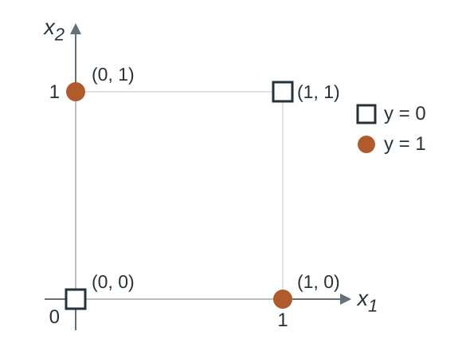
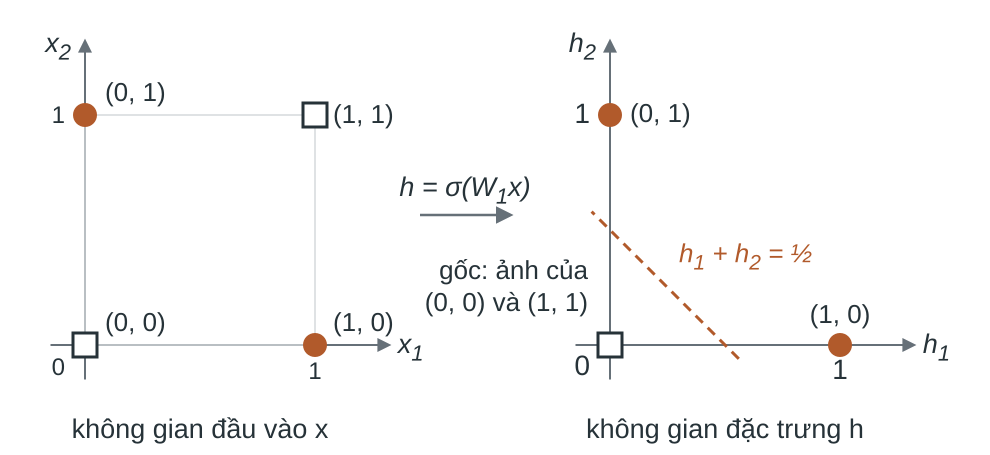
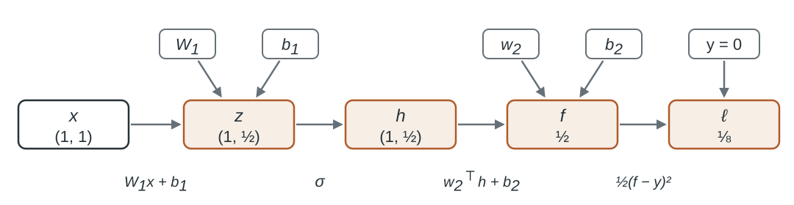
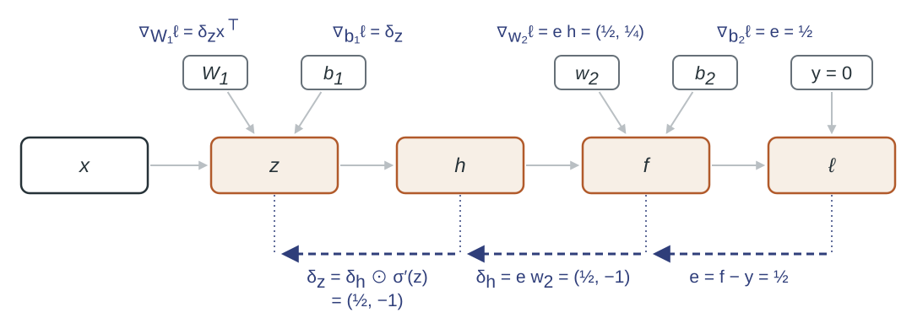
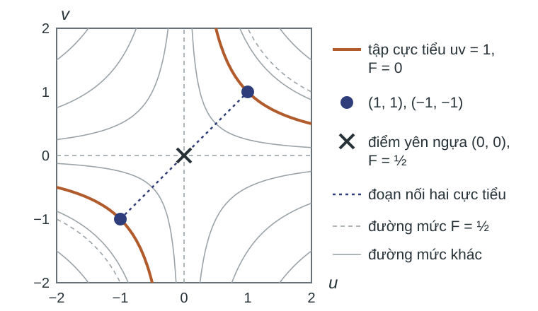
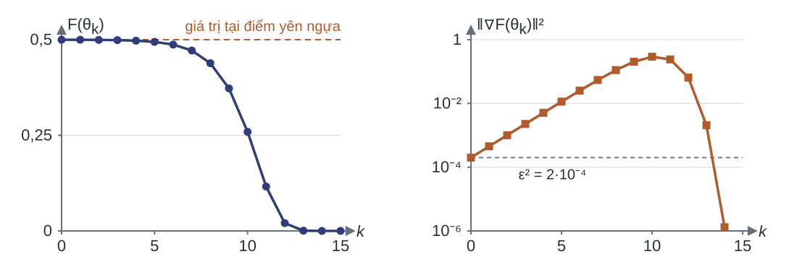
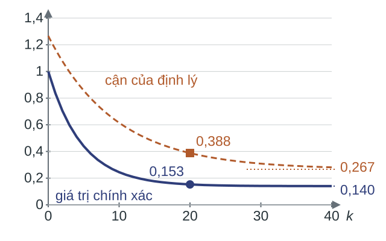

Mở rộng mô hình và dữ liệu Khả năng biểu diễn của mạng nơ-ron và tối ưu ngẫu nhiên
Cơ sở toán học cho AI
Bài 06
Trường Đại học Công nghệ
Hai giới hạn của các phương pháp ở Bài 05 là điểm xuất phát. Thứ nhất, mọi phương pháp đó (hạ gradient, Newton) dùng toàn bộ $n$ mẫu ở mỗi bước: một bước hạ gradient tốn $O(nd)$, một bước Newton tốn $O(nd^2+d^3)$. Thứ hai, dự đoán tuyến tính theo đặc trưng không biểu diễn được một số hàm đích, XOR là trường hợp điển hình, còn mở rộng đặc trưng thủ công làm số chiều $d$ tăng với các hệ quả thống kê đã thấy ở phần hồi quy nhiều chiều của Bài 05.
Lời đáp cho hai giới hạn gồm ba bước: mạng hai tầng biểu diễn XOR, với rủi ro thực nghiệm không lồi; gradient theo mọi tham số tính bằng lan truyền ngược, cùng điều gradient chứng nhận khi mục tiêu không lồi; gradient trên nhóm nhỏ mẫu thay gradient đầy đủ, cùng tốc độ hội tụ khi gradient có nhiễu.
Mục tiêu học tập
Sau bài học, người học có thể:
Chứng minh rủi ro thực nghiệm của mạng XOR không lồi bằng phản ví dụ theo định nghĩa. Tính gradient bằng lan truyền ngược; chỉ ra điểm có $\nabla F=0$ nhưng không là cực tiểu địa phương. Chọn hạ gradient đầy đủ, Newton hay hạ gradient ngẫu nhiên theo chi phí, giả thiết, bảo đảm hội tụ. Mục tiêu 1 ứng với mạch 2. Một phản ví dụ cho tính lồi gồm hai điểm, trung điểm của chúng và bất đẳng thức lồi $F\bigl(\tfrac12\theta+\tfrac12\theta'\bigr)\le\tfrac12F(\theta)+\tfrac12F(\theta')$ bị vi phạm tại trung điểm. Trong bài, hai điểm là hai cực tiểu toàn cục đối xứng qua phép đổi chỗ hai đơn vị ẩn. Ở ví dụ đoạn nối hai cực tiểu của mạng XOR, $\theta_A$ và $\theta_B$ có $F=0$, trung điểm có $F=\tfrac14$; ở câu 3 của bài tập cuối mạch 2, trung điểm có $F=\tfrac{27}{32}$. Người học chỉ nêu kết luận “$F$ không lồi” mà không dựng được hai điểm, trung điểm và bất đẳng thức bị vi phạm thì chưa đạt mục tiêu.
Mục tiêu 2 ứng với mạch 3 và mạch 4. Bài tập cuối mạch 3 yêu cầu tính thủ công truyền xuôi và truyền ngược của mạng ReLU tại một mẫu có đơn vị ẩn không hoạt động. Bài tập cuối mạch 4 dùng $F(u,v)=\tfrac12(uv-1)^2$: câu 1 yêu cầu chỉ ra rằng gốc, một điểm dừng, không là cực tiểu địa phương; câu 2 xét $(2,\tfrac12)$, một cực tiểu toàn cục ($F=0$) tại đó Hessian có trị riêng $0$ và $\tfrac{17}4$ nên phép kiểm tra bậc hai không kết luận. Đạt mục tiêu khi người học phân loại điểm dừng bằng dấu trị riêng của Hessian, bằng giá trị của $F$ khi phép kiểm tra không kết luận, và nêu được rằng gradient nhỏ chỉ chứng nhận điểm dừng xấp xỉ.
Mục tiêu 3 ứng với mạch 5, mạch 6 và bảng lựa chọn phương pháp ở mạch kết luận; hạ gradient ngẫu nhiên (stochastic gradient descent) viết tắt là SGD từ mạch 5. Trên bảng, chi phí ở cột mỗi bước, giả thiết ở cột tình huống và chú thích, bảo đảm hội tụ ở cột bảo đảm. Newton tốn $np^2+p^3$ mỗi bước, cần lồi mạnh và Hessian Lipschitz, hội tụ bậc hai cục bộ. Hạ gradient đầy đủ tốn $np$, cần lồi mạnh và trơn, hội tụ tuyến tính. SGD tốn $bp$. Khi mục tiêu lồi mạnh, chặn $\mathbb E\lVert\widehat g_k\rVert^2\le G^2$ và bước $\tfrac1{\mu(k+1)}$ cho $O(1/k)$ theo kỳ vọng; khi mục tiêu không lồi, gradient Lipschitz, chặn phương sai và bước hằng chọn theo $K$ cho cận $O(1/\sqrt K)$ đối với trung bình kỳ vọng bình phương chuẩn gradient. Bài tập cuối mạch 5, mạch 6 và câu 1 của câu hỏi tự kiểm tra đo mục tiêu này; một lựa chọn đạt khi nêu đủ ba tiêu chí.
Ba mục tiêu hỗ trợ các chuẩn đầu ra bài học (LLO) sau: một phần LLO11, một phần LLO12 và phần so sánh chi phí của LLO15 (phương pháp Newton); các chuẩn đầu ra học phần (CLO) liên quan là CLO1, CLO2, CLO4 của đề cương.
Kiến thức cần có: quy tắc dây chuyền dạng Jacobian chuyển vị và phép kiểm tra bậc hai bằng Hessian (Bài 00); hàm lồi và quy tắc hợp thành giữ tính lồi (Bài 01–02); hạ gradient, giả thiết gradient Lipschitz và bổ đề giảm (Bài 04); kết luận của Bài 05 về chi phí và chính quy hóa. Các định lý hội tụ được dẫn từ Bài 05b, tính không chệch và phương sai của gradient nhóm từ Bài 05c; chúng được phát biểu lại với ký hiệu chung và kiểm tra trên ví dụ, không chứng minh lại.
Nội dung
Bài toán huấn luyện khi mô hình và dữ liệu lớn Biểu diễn phi tuyến và mạng hai tầng Lan truyền ngược trên đồ thị tính toán Điểm dừng và bảo đảm của gradient khi không lồi Gradient nhóm nhỏ và chi phí mỗi bước Tốc độ hội tụ dưới nhiễu và dừng sớm Tổng hợp và lựa chọn phương pháp Hai giới hạn của Bài 05 và ký hiệu chung mở bài (mục 1). Giới hạn biểu diễn được xử lý ở mục 2–4: mạng hai tầng biểu diễn được XOR nhưng làm rủi ro thực nghiệm không lồi; lan truyền ngược tính gradient một mẫu với chi phí $O(p)$; khi mục tiêu không lồi, gradient chỉ chứng nhận điểm dừng xấp xỉ. Giới hạn chi phí được xử lý ở mục 5–6: gradient nhóm nhỏ có chi phí mỗi bước không phụ thuộc $n$, đổi lại bằng nhiễu, tốc độ chậm hơn và quy tắc dừng theo tập xác thực. Mục 7 tổng hợp điều mất, điều còn giữ và quy tắc chọn phương pháp. Tên mục 1 là tên mạch mở đầu; trang bìa mang tên bài.
Tài liệu đọc trước: Goodfellow, Bengio và Courville (2016), §6.1, §6.5, §§8.1–8.3.
Ngữ cảnh: dữ liệu, mô hình và rủi ro
Ký hiệu: dữ liệu ${\{(x_i,y_i)\}_{i=1}^n},$ $x_i\in\mathbb R^d;$ mô hình $f(x;\theta),$ $\theta\in\mathbb R^p.$
Lưu ý: $d$: số chiều đầu vào; $p$: số tham số học được; với mạng nơ-ron, $p$ có thể lớn hơn $d$ nhiều.
$$\begin{aligned}F(\theta)&=\frac1n\sum_{i=1}^n\ell_i(\theta),\\\ell_i(\theta)&=\ell\bigl(f(x_i;\theta),y_i\bigr).\end{aligned}$$
$F$: rủi ro thực nghiệm (empirical risk), mất mát trung bình trên các mẫu quan sát được.
$$R(\theta)=\mathbb E_{(X,Y)\sim P}\,\ell\bigl(f(X;\theta),Y\bigr).$$
$R$: rủi ro kỳ vọng (expected risk; Bài 05); $P$: phân phối sinh dữ liệu, chưa biết.
Rủi ro kỳ vọng $R$ là mất mát trung bình theo phân phối $P$ sinh ra dữ liệu. Vì $P$ chưa biết, $R$ không tính được; $F$ là ước lượng của $R$ từ $n$ mẫu quan sát, và $\ell_i$ là mất mát trên mẫu thứ $i$. Mất mát bình phương $\ell(f,y)=\tfrac12(f-y)^2$ được chọn để tính thủ công; mất mát logistic của Bài 05 cũng lồi theo $f$, và kết luận về tính không lồi của bài vẫn giữ với mất mát đó: phản ví dụ trung điểm vẫn dùng được, dù không có cực tiểu khi không chính quy hóa.
Hai số chiều có vai trò khác nhau: $d$ do dữ liệu quyết định, $p$ do mô hình quyết định. Mô hình tuyến tính có hệ số chặn $c$ có $p=d+1$; mạng nơ-ron có số tham số tăng theo số đơn vị ẩn, nên $p$ có thể lớn hơn $d$ nhiều bậc. Chi phí tính toán của các phương pháp trong bài được đo theo $n$ và $p$.
Đối chiếu ký hiệu. Bài 05b viết dãy lặp $x_k\in\mathbb R^n$, hàm mục tiêu $f$ và số mẫu $N$; khi dẫn định lý của Bài 05b, $x_k$ đọc là $\theta_k$, $f$ là $F$, số chiều $n$ là $p$. Bài 05c viết rủi ro thực nghiệm $J$, số mẫu $N$ và $d$ cho số chiều tham số. Bài 05 viết đầu vào thô $u$, đặc trưng $x=\varphi(u)\in\mathbb R^d$ có tọa độ hằng $1$, hệ số chặn nằm trong $w$ và dãy lặp $w_k$; ở đây đầu vào thô là $x\in\mathbb R^d$ và mô hình tuyến tính có hệ số chặn riêng $c$.
Ngữ cảnh: bài toán huấn luyện và dãy lặp
Huấn luyện: cực tiểu hóa $F$ trên $\mathbb R^p.$ Dãy lặp dạng chung:
$$\boxed{\theta_{k+1}=\theta_k-\eta_kg_k},\qquad k=0,1,2,\dots$$
$g_k$: gradient đầy đủ $\nabla F(\theta_k)$ hoặc ước lượng gradient trên một nhóm mẫu; $\eta_k>0$: bước.
Tập xác thực: mẫu tách riêng, không dùng tính gradient, dùng để ước lượng $R.$
Nhu cầu: cực tiểu hóa $F$ bằng gradient khi $f$ phi tuyến theo $\theta$ và $n$ lớn.
Dãy lặp dạng chung bao gồm hai phương pháp chính của bài. Với $g_k=\nabla F(\theta_k)$ là hạ gradient đầy đủ của Bài 04, mỗi bước dùng toàn bộ $n$ mẫu. Với $g_k$ tính trên một nhóm mẫu là hạ gradient ngẫu nhiên, xét từ mạch 5; khi đó $g_k$ là biến ngẫu nhiên và các bảo đảm hội tụ được phát biểu theo kỳ vọng.
Tập xác thực (validation set) là phần mẫu tách khỏi dữ liệu huấn luyện; mất mát trung bình trên tập này ước lượng $R$ và được dùng để chọn bước dừng, hệ số chính quy hóa. Dòng nhu cầu ghép hai điều kiện mà Bài 01–04 không xét, $f$ phi tuyến theo $\theta$ và $n$ lớn; đó là hai giới hạn biểu diễn và chi phí, được đối chiếu với giả thiết lồi của Bài 01–04.
Quy ước chữ $b$: độ chệch (bias) của mạng có chỉ số, $b_1$, $b_2$; $b$ không chỉ số là kích thước nhóm (batch size) của nhóm nhỏ (minibatch; Bài 05b, 05c gọi là lô nhỏ). Ký hiệu $\sigma$ ở phần mạng và phần lan truyền ngược là hàm kích hoạt; $\sigma^2$ từ phần gradient nhóm nhỏ trở đi là chặn phương sai của gradient ngẫu nhiên. Hai đại lượng không liên quan.
Giả thiết lồi và hai giới hạn khi mở rộng quy mô
Dòng “Mục tiêu” là lý do thống kê: $F$ chỉ là đại lượng thay thế (surrogate) cho $R$. Theo Bài 05, khi số đặc trưng tăng, nghiệm khớp dữ liệu huấn luyện tốt hơn nhưng khớp kém dần trên dữ liệu mới, và trên dữ liệu tách được, mất mát logistic không có cực tiểu nếu không chính quy hóa. Cực tiểu chính xác của rủi ro thực nghiệm vì vậy không phải mục tiêu; dừng sớm và chính quy hóa là một phần của phương pháp. Khả năng tổng quát hóa (generalization) được đo bằng $R$ của tham số tìm được.
Dòng “Gradient”: hạ gradient đầy đủ với bước $\eta\le1/L$ giảm mục tiêu ở mỗi bước (bổ đề giảm). Gradient nhóm nhỏ là ước lượng không chệch nhưng có phương sai, nên chỉ còn bất đẳng thức một bước có số hạng nhiễu, và mục tiêu có thể tăng theo kỳ vọng ở một bước.
Dòng “Bảo đảm”: với mục tiêu lồi khả vi, mọi điểm dừng là cực tiểu toàn cục. Mô hình phi tuyến làm mất tính chất này, và bảo đảm còn lại chỉ chặn chuẩn gradient, tức chỉ chứng nhận điểm dừng xấp xỉ. Chữ “thường” ứng với mục tiêu không lồi; với mục tiêu lồi mạnh, gradient nhóm vẫn cho hội tụ theo kỳ vọng tới cực tiểu.
Dòng “Chi phí” là lý do tính toán: khi một bước dùng đủ $n$ mẫu vượt ngân sách mỗi bước, hạ gradient ngẫu nhiên trên nhóm $b$ mẫu là phương án dùng được, đổi lại bằng nhiễu và tốc độ chậm hơn. Bảng tổng hợp cuối bài lặp lại bốn dòng này, cùng thứ tự, kèm kết quả của bài. Dòng Bảo đảm và dòng Chi phí là hệ quả của hai giới hạn của Bài 05, nêu riêng ở trang sau.
Hai giới hạn: biểu diễn và chi phí
Nhắc lại: với $F$ lồi, khả vi:
$$\nabla F(\theta^*)=0\ \Longrightarrow\ \theta^*\in\operatorname*{arg\,min}_{\theta\in\mathbb R^p}F(\theta).$$
Giới hạn (ii), biểu diễn: dự đoán tuyến tính theo đầu vào gốc không biểu diễn được XOR.
Mô hình phi tuyến theo $\theta$ khắc phục được nhưng làm $F$ không lồi; kéo theo trên không còn được bảo đảm.
Giới hạn (i), chi phí: một bước hạ gradient trên $n$ mẫu tốn $O(np).$
Bảng đối chiếu bốn dòng ở trang trước là đầu vào; hai giới hạn được nêu riêng vì chúng sinh ra dòng Bảo đảm và dòng Chi phí của bảng. Hai giới hạn là kết luận ở trang cuối mạch giới hạn của tối ưu tất định trong Bài 05. Giới hạn (ii) được nêu trước giới hạn (i) vì mạch 2–4 xử lý nó trước. Giới hạn (ii), biểu diễn: với đặc trưng cố định $(1,u)$, ba điểm nhãn $-,+,-$ trên một trục không tách được; đặc trưng thủ công sửa được nhưng làm số chiều tăng. XOR là dạng hai chiều của cùng hiện tượng, chứng minh ở mục 2 của bài này. Đặc trưng thủ công (trang đặc trưng thủ công của mạch 2) cũng biểu diễn được XOR nhưng giữ mô hình tuyến tính theo $\theta$, nên $F$ vẫn lồi. Tính không lồi không phải bản thân giới hạn (ii) mà đến từ mô hình phi tuyến theo $\theta$, như mạng có đặc trưng học được: mô hình này biểu diễn được XOR nhưng làm rủi ro thực nghiệm không lồi, nên kéo theo “gradient bằng không thì là cực tiểu toàn cục” của Bài 02 và Bài 04 không còn được bảo đảm.
Giới hạn (i), chi phí: một bước hạ gradient trên mô hình tuyến tính tốn $O(nd)$, một bước Newton tốn $O(nd^2+d^3)$, và cả hai dùng toàn bộ $n$ mẫu. Với mạng có $p$ tham số, gradient một mẫu tốn $O(p)$ nhờ lan truyền ngược (mạch 3), nên một bước hạ gradient đầy đủ tốn $O(np)$. Mặt trang viết chung $O(np)$: với mô hình tuyến tính có hệ số chặn, $p=d+1$ nên $O(np)=O(nd)$. Hai giới hạn được xử lý theo thứ tự: biểu diễn ở mạch 2–4, chi phí ở mạch 5–6.
2. Biểu diễn phi tuyến và mạng hai tầngMuốn biểu diễn XOR bằng đặc trưng học được từ dữ liệu, thay cho đặc trưng thủ công.
XOR · đặc trưng thủ công · mạng hai tầng · đối xứng hoán vị · tính không lồi
Dự đoán tuyến tính theo hai đặc trưng gốc không biểu diễn được XOR: đây là giới hạn (ii) của phần mở đầu. Giới hạn này được chứng minh trên bốn điểm, sửa bằng đặc trưng tích rồi bằng một tầng ẩn; mạng hai tầng $f(x;\theta)$ với $p=md+2m+1$ tham số ra đời từ đó, và rủi ro thực nghiệm $F(\theta)$ của nó không lồi. Lan truyền ngược nhận $f$ và $F$ này để tính gradient.
Bài toán XOR
Nhu cầu: phân lớp đúng bốn điểm XOR bằng mô hình tuyến tính ${f(x;w,c)=w^\top x+c}.$
Nhãn $\{0,1\}$ (Bài 05: $\pm1,$ ${y_\pm=2y-1}$); mất mát ${\ell=\tfrac12(f-y)^2}$ để tính thủ công.

$w\in\mathbb R^2,$ $c\in\mathbb R;$ dự đoán lớp $1$ khi $f>\tfrac12.$
XOR (phép “hoặc loại trừ”) cho đầu ra $1$ khi đúng một đầu vào bằng $1$. Bốn điểm vừa là toàn bộ dữ liệu huấn luyện vừa là toàn bộ miền quan tâm, nên bài toán không đặt vấn đề tổng quát hóa; câu hỏi duy nhất là mô hình có biểu diễn được hàm đích trên bốn điểm hay không (Goodfellow, Bengio và Courville, 2016, §6.1).
Mô hình tuyến tính ở đây dùng hai đặc trưng gốc $x_1,x_2$. Hệ số chặn viết $c$ vì chữ $b$ dành cho kích thước nhóm ở phần gradient nhóm nhỏ. Ngưỡng $\tfrac12$ là trung điểm giữa hai nhãn $0$ và $1$.
Ghi chú bài giảng Bài 05 (Mệnh đề 05.40) dùng cùng bốn điểm với nhãn $\pm1$: $+1$ cho $(0,1)$, $(1,0)$ và $-1$ cho $(0,0)$, $(1,1)$, tức $y_\pm=2y-1$. Chứng minh Mệnh đề 1 của bài này chỉ dùng giá trị của hàm affine tại bốn điểm, nên không phụ thuộc cách mã hóa nhãn. Mất mát bình phương cho nghiệm bình phương nhỏ nhất tính thủ công được, và cho $F=0$ tại một mạng biểu diễn đúng XOR.
Tính không tách được tuyến tính của XOR
Nhắc lại (Bài 05): dữ liệu tách được tuyến tính (linearly separable) nếu có $w,c$ với ${y_{\pm,i}\,g(x_i)>0}$ mọi $i,$ ${g(x)=w^\top x+c}.$
Mệnh đề 1. Dữ liệu XOR không tách được tuyến tính.
Chứng minh. Với mọi $w,c$:
$$\begin{aligned}g(1,0)+g(0,1)&=w_1+w_2+2c\\&=g(0,0)+g(1,1).\end{aligned}$$
Tách được đòi hỏi vế trái $>0>$ vế phải, mâu thuẫn. $\square$
Định nghĩa là nhắc lại từ phần hồi quy logistic của Bài 05 (nhãn $\pm1$, biên có dấu (signed margin, còn gọi là lề có dấu) $y_ix_i^Tw>0$). Mệnh đề 1 (đánh số của Bài 06) ứng với Mệnh đề 05.40 của ghi chú bài giảng Bài 05; deck Bài 05 không chứng minh kết quả này, chỉ nêu giới hạn biểu diễn bằng ba điểm nhãn $-,+,-$ trên một trục. Mệnh đề 1 trên deck Bài 05 là một kết quả khác (chế độ nội suy). Với mô hình của bài toán XOR, $g=f-\tfrac12$ và $y_\pm=2y-1$; điều kiện $y_{\pm,i}\,g(x_i)>0$ nghĩa là $f>\tfrac12$ ở lớp $1$ và $f<\tfrac12$ ở lớp $0$, tức phân lớp đúng bằng ngưỡng $\tfrac12$.
Đẳng thức tổng có nghĩa hình học: hai đường chéo của hình vuông có chung trung điểm $(\tfrac12,\tfrac12)$, và giá trị của một hàm affine tại trung điểm bằng trung bình giá trị tại hai đầu mút. Nếu $g>0$ tại hai điểm lớp $1$ thì $g(\tfrac12,\tfrac12)>0$; nếu $g<0$ tại hai điểm lớp $0$ thì $g(\tfrac12,\tfrac12)<0$. Mệnh đề 1 là dạng hai chiều của giới hạn biểu diễn mà Bài 05 nêu ở cuối mạch giới hạn của tối ưu tất định; ví dụ bình phương nhỏ nhất kế tiếp là phần mới so với Bài 05.
Ví dụ: bình phương nhỏ nhất trên dữ liệu XOR
Mô hình ${f=w_1x_1+w_2x_2+c},$ bốn điểm XOR, ${F=\tfrac14\sum_i\tfrac12\bigl(f(x_i)-y_i\bigr)^2}.$
Tính nghiệm bình phương nhỏ nhất $(w_1,w_2,c).$
Ma trận thiết kế $A$ có các hàng $(x_1,x_2,1);$ hệ phương trình chuẩn:
$$A^\top A=\begin{pmatrix}2&1&2\\1&2&2\\2&2&4\end{pmatrix},\qquad A^\top y=\begin{pmatrix}1\\1\\2\end{pmatrix}.$$
Nghiệm ${w=(0,0)},$ ${c=\tfrac12};$ phần dư $\pm\tfrac12$ tại cả bốn điểm, ${F=\tfrac18}.$
Diễn giải: mô hình tốt nhất dự đoán $\tfrac12$ cho mọi đầu vào, không phân biệt hai lớp.
Kiểm tra nghiệm: thế $(w_1,w_2,c)=(0,0,\tfrac12)$ vào hệ $A^\top A(w_1,w_2,c)^\top=A^\top y$, ba hàng cho $2\cdot\tfrac12=1$, $2\cdot\tfrac12=1$ và $4\cdot\tfrac12=2$. Phần dư $f-y$ tại $(0,0),(0,1),(1,0),(1,1)$ là $\tfrac12,-\tfrac12,-\tfrac12,\tfrac12$, nên $F=\tfrac14\cdot4\cdot\tfrac12\cdot\tfrac14=\tfrac18$.
Nghiệm hằng $\tfrac12$ bằng trung bình của nhãn. Kết quả khớp Mệnh đề 1: không hàm affine nào phân lớp đúng, và hàm affine tối ưu theo bình phương nhỏ nhất bỏ qua đầu vào. Thêm đặc trưng tích $x_1x_2$ sửa được giới hạn này.
Đặc trưng thủ công và chi phí theo số chiều
Số tham số (đơn thức bậc $\le q$ của $d$ biến): ${p=\binom{d+q}{q}}$
Mỗi bước: $O(np)$ (hạ gradient), $O(np^2+p^3)$ (Newton, Bài 05).
Nhận xét. Đặc trưng thủ công khắc phục giới hạn biểu diễn nhưng làm $p$ tăng nhanh, tăng chi phí và nguy cơ quá khớp (overfitting).
Nhu cầu: phép biến đổi đặc trưng có tham số, học từ dữ liệu, thay cho liệt kê đơn thức.
Mệnh đề 1 cho biết giới hạn thuộc về không gian đặc trưng, nên đổi không gian đặc trưng thì giới hạn mất. Với đặc trưng tích $\varphi(x)=(x_1,x_2,x_1x_2)$, hàm $f=x_1+x_2-2x_1x_2$ tuyến tính theo $\varphi$ và khớp đúng XOR. Kiểm tra: $f(0,0)=0$, $f(0,1)=f(1,0)=1$, $f(1,1)=1+1-2=0$. Với $w_0+w_1x_1+w_2x_2+w_3x_1x_2$, bốn điều kiện cho nghiệm duy nhất $(0,1,1,-2)$, tức chính hàm trên.
Cách sửa này cần biết trước dạng tương tác. Khi không biết, phải thêm mọi đơn thức tới bậc $q$. Ở đây $p$ là số đơn thức bậc không quá $q$, kể cả đơn thức hằng $1$, nên $p$ là số tham số của mô hình tuyến tính theo các đơn thức này, tính cả hệ số chặn; ký hiệu $q$ cho bậc để không trùng với $p$, và Bài 05 viết cùng công thức là $\binom{d_0+q}{q}$ với $d_0$ biến đầu vào.
Nhận xét nêu hai loại chi phí của việc tăng $p$. Chi phí tính toán: với $d=1000$, $q=2$, số tham số là $p=501\,501$; một bước hạ gradient tốn khoảng $np\approx5\cdot10^5n$ phép tính, còn một bước Newton chỉ riêng phần giải hệ đã cần khoảng $p^3\approx1{,}26\cdot10^{17}$ phép tính. Chi phí thống kê: phần hồi quy nhiều chiều của Bài 05 cho thấy khi số tham số $p$ tăng với $n$ cố định, nghiệm khớp dữ liệu huấn luyện tốt hơn nhưng sai số trên dữ liệu mới tăng dần; đó là quá khớp, và chính quy hóa chỉ giảm bớt hiện tượng này.
Giới hạn này tạo nhu cầu cho một phép biến đổi đặc trưng có tham số, học được từ dữ liệu, thay cho việc liệt kê mọi đơn thức.
Phép biến đổi đặc trưng bằng tầng ẩn
Trực quan. ${h_1=\max\{0,x_1-x_2\}},$ ${h_2=\max\{0,x_2-x_1\}}$ đưa ${(0,0),(1,1)\mapsto(0,0)},$ ${(1,0)\mapsto(1,0)},$ ${(0,1)\mapsto(0,1)}.$ Trong không gian $h,$ đường thẳng ${h_1+h_2=\tfrac12}$ tách hai lớp.

Phép biến đổi gộp hai điểm lớp $0$ vào cùng một điểm. Không phép biến đổi affine nào làm XOR tách được tuyến tính: phép affine giữ trung điểm chung của hai đường chéo, nên lập luận của Mệnh đề 1 vẫn áp dụng trong không gian mới. Hàm $\max\{0,\cdot\}$ làm mất tính affine tại $x_1=x_2$. Goodfellow, Bengio và Courville (2016, Hình 6.1) dùng một phép biến đổi khác với cùng ý: học một không gian đặc trưng trong đó bài toán trở thành tuyến tính.
Hai đặc trưng $h_1,h_2$ tạo thành tầng ẩn (hidden layer): chúng là $\sigma$ áp vào một hàm affine của $x$, với $\sigma(z)=\max\{0,z\}$; hệ số của hàm affine là tham số. Ở đây mới có sự tồn tại của một bộ tham số làm được việc tách. Ghép thêm một tầng tuyến tính lên $h$ cho mạng hai tầng; tham số của mạng được học bằng tối ưu ở các phần sau. Kiểm tra trong không gian $h$: $h_1+h_2$ bằng $0$ cho lớp $0$ và bằng $1$ cho lớp $1$, nên ngưỡng $\tfrac12$ tách đúng.
Ví dụ: mạng hai đơn vị ẩn biểu diễn XOR
Tính $f$ tại bốn đầu vào với tham số $\theta_A$ (mỗi hàng của $W_1$ là một đơn vị ẩn):
$$W_1=\begin{pmatrix}1&-1\\-1&1\end{pmatrix},$$
${b_1=(0,0)^\top},$ ${w_2=(1,1)^\top},$ ${b_2=0}.$
Truyền xuôi: ${z=W_1x+b_1},$ ${h=\max\{0,z\}}$ theo thành phần (hàm ReLU; điểm gãy tại ${z=0}$), ${f=w_2^\top h+b_2}.$
Kết luận: ${f(x;\theta_A)=\lvert x_1-x_2\rvert}$ trên $\{0,1\}^2,$ nên ${F(\theta_A)=0}.$
Hai hàng của $W_1$ là hai hàm affine bên trong $h_1$, $h_2$: $z_1=x_1-x_2$, $z_2=x_2-x_1$. Hàm $\sigma(z)=\max\{0,z\}$ gọi là hàm ReLU; đơn vị ẩn dùng hàm này là đơn vị tuyến tính chỉnh lưu (rectified linear unit, ReLU). Tầng ra cộng hai đặc trưng, $f=h_1+h_2=\lvert x_1-x_2\rvert$, nên $f$ bằng nhãn tại cả bốn điểm và $F(\theta_A)=0$. Tham số này được gọi là $\theta_A$; phép đổi chỗ hai đơn vị ẩn dùng lại nó để dựng tham số đối xứng $\theta_B$.
Tại $(0,0)$ và $(1,1)$ cả hai tiền kích hoạt bằng $0$, tức nằm đúng điểm gãy của ReLU. Giá trị hàm vẫn xác định; chỉ đạo hàm tại điểm gãy cần quy ước, và quy ước đó được nêu ở thuật toán lan truyền ngược. Lập luận về tính không lồi (Mệnh đề 3) chỉ dùng giá trị hàm, nên không bị ảnh hưởng.
Goodfellow, Bengio và Courville (2016, (6.4)–(6.11)) cho một nghiệm khác, $W_1=\left(\begin{smallmatrix}1&1\\1&1\end{smallmatrix}\right)$, $b_1=(0,-1)$, $w_2=(1,-2)$, $b_2=0$; nghiệm đó xuất hiện trong câu hỏi cuối phần.
Mạng nơ-ron hai tầng
Định nghĩa. Cho ${d,m\in\mathbb N_{>0}},$ ${W_1\in\mathbb R^{m\times d}},$ ${b_1\in\mathbb R^m},$ ${w_2\in\mathbb R^m},$ ${b_2\in\mathbb R}$ và ${\sigma:\mathbb R\to\mathbb R}$ áp theo từng thành phần. Mạng hai tầng là hàm
$$f(x;\theta)=w_2^\top\sigma(W_1x+b_1)+b_2,$$
với ${\theta=(W_1,b_1,w_2,b_2)\in\mathbb R^p},$ ${p=md+2m+1}.$
Ký hiệu: $\sigma$ là hàm kích hoạt; $m$ là số đơn vị ẩn; $z=W_1x+b_1$ là tiền kích hoạt.
Nhận xét. Nếu $\sigma(z)=z$ thì ${f=(W_1^\top w_2)^\top x+(w_2^\top b_1+b_2)}$ là hàm affine của $x,$ nên Mệnh đề 1 vẫn áp dụng: $\sigma$ phải phi tuyến.
Thuật ngữ: $f$ là mạng nơ-ron (neural network) hai tầng; $\sigma$ là hàm kích hoạt (activation function); $m$ là số đơn vị ẩn (hidden unit); $z=W_1x+b_1\in\mathbb R^m$ là tiền kích hoạt (pre-activation); $h=\sigma(z)$ là kích hoạt; phép tính lần lượt $z$, $h$, $f$ là truyền xuôi (forward pass). Mặc định của bài là $\sigma(z)=\max\{0,z\}$.
Đếm tham số: $W_1$ có $md$ phần tử, $b_1$ và $w_2$ mỗi vector $m$ phần tử, $b_2$ một phần tử. Mạng biểu diễn XOR là trường hợp $d=m=2$, $p=9$. Với ảnh $28\times28$ điểm ảnh, $d=784$, và $m=100$ đơn vị ẩn, $p=78\,400+100+100+1=78\,601$; số này dùng lại ở phần lan truyền ngược để đếm chi phí gradient.
Nhận xét giải thích vai trò của $\sigma$: không có hàm kích hoạt phi tuyến, hai tầng tuyến tính chồng lên nhau vẫn là một hàm affine, và Mệnh đề 1 cho thấy không hàm affine nào phân lớp đúng XOR. Mạng sâu lặp lại cấu trúc “affine rồi $\sigma$” nhiều lần; bài này chỉ cần hai tầng.
Rủi ro thực nghiệm theo tham số mạng
$$F(\theta)=\frac1n\sum_{i=1}^n\tfrac12\bigl(f(x_i;\theta)-y_i\bigr)^2.$$
Huấn luyện mạng hai đơn vị ẩn cho XOR là cực tiểu hóa $F$ trên $\mathbb R^9$ với bốn mẫu; $\theta_A$ đạt ${F=0}.$
Mất mát $\ell(f,y)=\tfrac12(f-y)^2$ lồi theo $f$. Quy tắc hợp thành của Bài 02 cho: $\theta\mapsto\ell(f(x_i;\theta),y_i)$ lồi nếu $\theta\mapsto f(x_i;\theta)$ affine. Với mô hình tuyến tính điều kiện này đúng; với mạng, $f$ chứa tích của tham số tầng ra với tham số tầng ẩn và chứa $\sigma$, nên quy tắc không áp dụng (Boyd và Vandenberghe, 2004, §3.2).
“Không được bảo đảm” chưa phải “không lồi”. Phản ví dụ cụ thể trên chính bài toán XOR dựa vào đối xứng hoán vị các đơn vị ẩn (Mệnh đề 2 và 3).
Kết luận không lồi không phụ thuộc việc chọn mất mát bình phương. Với nhãn $\pm1$ và mất mát logistic $\log(1+e^{-yf})$, hai tham số $\theta_A$, $\theta_B$ (đổi chỗ hai đơn vị ẩn) cho cùng giá trị $F=\tfrac12\bigl(\log2+\log(1+e^{-1})\bigr)\approx0{,}503$, còn trung điểm của chúng cho $f\equiv0$ và $F=\log2\approx0{,}693$, lớn hơn trung bình hai đầu mút; một hàm lồi không thể có tính chất này.
Đối xứng hoán vị các đơn vị ẩn
Ví dụ. Đổi chỗ hai đơn vị ẩn của $\theta_A$ cho tham số $\theta_B\text{:}$
$\theta_B\ne\theta_A$ nhưng hai tham số cho cùng một hàm.
Mệnh đề 2. Với mọi ma trận hoán vị ${P\in\mathbb R^{m\times m}}$ (mỗi hàng, mỗi cột có đúng một số $1$) và mọi $x\in\mathbb R^d,$
$$\begin{aligned}&f(x;PW_1,Pb_1,Pw_2,b_2)\\&\quad=f(x;W_1,b_1,w_2,b_2).\end{aligned}$$
Một mạng có $m$ đơn vị ẩn có $m!$ cách sắp thứ tự các đơn vị.
Đổi chỗ hai đơn vị ẩn nghĩa là đổi chỗ đồng thời hai hàng của $W_1$, hai phần tử của $b_1$ và hai phần tử của $w_2$. Với $\theta_A$, đổi hai hàng của $W_1$ cho $\theta_B$; $b_1$ và $w_2$ không đổi vì hai phần tử của chúng bằng nhau.
Ma trận hoán vị có mọi phần tử bằng $0$ hoặc $1$, mỗi hàng và mỗi cột đúng một số $1$; $Pz$ sắp lại các thành phần của $z$. Chứng minh Mệnh đề 2. Vì $\sigma$ áp theo từng thành phần, $\sigma(Pz)=P\sigma(z)$ với mọi ma trận hoán vị $P$. Do đó $(Pw_2)^\top\sigma(PW_1x+Pb_1)=w_2^\top P^\top P\sigma(W_1x+b_1)=w_2^\top\sigma(W_1x+b_1)$, vì $P^\top P=I$. Mệnh đề nói hàm $\theta\mapsto f(\cdot;\theta)$ không đơn ánh: nhiều tham số cho cùng một hàm, nên cùng giá trị $F$. Goodfellow, Bengio và Courville (2016, §8.2.2) gọi hiện tượng này là đối xứng không gian trọng số (weight space symmetry).
Hệ quả cho khởi tạo: nếu hai đơn vị ẩn được khởi tạo giống hệt nhau, chúng nhận cùng gradient và giữ giống nhau sau mọi bước; nội dung khởi tạo thuộc Bài 06b. Cặp $\theta_A$, $\theta_B$ là đầu vào cho phép kiểm tra tính lồi của Mệnh đề 3.
Tính không lồi của rủi ro thực nghiệm
Mệnh đề 3. Giả sử $\theta^*$ là cực tiểu toàn cục có hai đơn vị ẩn mang tham số khác nhau.
${P\theta:=(PW_1,Pb_1,Pw_2,b_2)}$ đổi chỗ hai đơn vị đó. Khi đó:
${P\theta^*\ne\theta^*}$ cũng là cực tiểu toàn cục;
nếu $F$ lồi, mọi điểm của đoạn $[\theta^*,P\theta^*]$ là cực tiểu toàn cục. Chứng minh. Mệnh đề 2; tập cực tiểu của hàm lồi là tập lồi.
Chứng minh đầy đủ: theo Mệnh đề 2, $F(P\theta^*)=F(\theta^*)$, nên $P\theta^*$ cũng là cực tiểu toàn cục; $P\theta^*\ne\theta^*$ vì hai đơn vị bị đổi chỗ có tham số khác nhau. Tập cực tiểu của một hàm lồi là tập lồi (Bài 01), nên nếu $F$ lồi thì cả đoạn nối hai cực tiểu nằm trong tập cực tiểu. Mệnh đề cho một phép kiểm tra tính lồi: tìm một điểm trên đoạn có $F$ lớn hơn giá trị cực tiểu.
Mệnh đề 3 không khẳng định mọi mạng trên mọi dữ liệu đều cho $F$ không lồi. Không lồi cũng không cần ReLU: mạng tuyến tính hai tầng, chỉ có tích tham số, đã không lồi (ví dụ mạng tuyến tính một đơn vị ở phần điểm dừng).
Ví dụ: đoạn nối hai cực tiểu của mạng XOR
Đoạn ${\theta(t)=(1-t)\theta_A+t\theta_B},$ $t\in[0,1],$ giữa hai tham số đối xứng có ${F=0}.$
Tính $F(\theta(t)).$
${W_1(t)=(1-2t)\begin{pmatrix}1&-1\\-1&1\end{pmatrix}},$ nên ${f=\lvert1-2t\rvert\,\lvert x_1-x_2\rvert}.$
Tại ${t=\tfrac12}\text{:}$ ${W_1=0},$ ${f\equiv0},$ ${F=\tfrac14>0}.$
Kết luận: $F$ không lồi trên $\mathbb R^9.$
Trên XOR: $b_1=0$, $w_2=(1,1)$, $b_2=0$ không đổi dọc đoạn vì hai tham số $\theta_A$, $\theta_B$ chỉ khác nhau ở $W_1$. Chỉ hai điểm $(0,1)$, $(1,0)$ có sai số khác $0$, và $F(\theta(t))=\tfrac14\bigl(1-\lvert1-2t\rvert\bigr)^2$, tức $t^2$ khi $t\le\tfrac12$ và $(1-t)^2$ khi $t\ge\tfrac12$. Hình cho thấy đồ thị nằm trên dây cung nối $(0,0)$ và $(1,0)$, trái với định nghĩa hàm lồi.
Kết luận này nối với giới hạn biểu diễn ở phần mở đầu: đặc trưng thủ công khắc phục giới hạn bằng cách tăng số chiều; tầng ẩn khắc phục nó mà không liệt kê đơn thức, nhưng làm mất tính lồi. Phần lan truyền ngược tính gradient của $F$ này; phần điểm dừng xét điều gradient chứng nhận khi $F$ không lồi.
Bài tập: biểu diễn XOR và đối xứng của mạng
Câu hỏi:
Tìm $w_0,\dots,w_3$ để ${w_0+w_1x_1+w_2x_2+w_3x_1x_2}$ khớp XOR.
Với ${W_1=\begin{pmatrix}1&1\\1&1\end{pmatrix}},$ ${b_1=(0,-1)},$ ${w_2=(1,-2)},$ ${b_2=0}$: tính $z,$ $h,$ $f$ tại bốn đầu vào XOR.
Đổi chỗ hai đơn vị ẩn của mạng ở câu 2; tính $F$ tại trung điểm của hai tham số.
Tính số tham số $p$ khi ${d=784},$ ${m=100}.$ Gợi ý: ở câu 1, viết bốn điều kiện khớp tại bốn đầu vào. Ở câu 3, đổi chỗ hai đơn vị là đổi chỗ đồng thời hai hàng của $W_1$, hai phần tử của $b_1$ và hai phần tử của $w_2$; tham số mới cũng có $F=0$ theo Mệnh đề 2, và giá trị tại trung điểm cho phép kiểm tra của Mệnh đề 3. Ở câu 4, dùng $p=md+2m+1$.
Bài tập: biểu diễn XOR và đối xứng của mạng
Lời giải:
${(w_0,w_1,w_2,w_3)=(0,1,1,-2)},$ duy nhất: bốn điều kiện xác định bốn ẩn.
${z=(0,-1),(1,0),(1,0),(2,1)};$ ${h=(0,0),(1,0),(1,0),(2,1)};$ ${f=0,1,1,0}.$
Tham số đổi chỗ: ${b_1=(-1,0)},$ ${w_2=(-2,1)};$ trung điểm cho ${f=0,-\tfrac12,-\tfrac12,-\tfrac32},$ ${F=\tfrac{27}{32}>0}.$
${p=md+2m+1=78\,601}.$ Câu 1: bốn điều kiện $w_0=0$, $w_0+w_2=1$, $w_0+w_1=1$, $w_0+w_1+w_2+w_3=0$ xác định lần lượt bốn ẩn.
Câu 2: theo thứ tự $(0,0),(0,1),(1,0),(1,1)$. Mạng này cũng biểu diễn XOR (Goodfellow, Bengio và Courville, 2016, (6.7)–(6.11)). Tại $(0,1)$ và $(1,0)$, đơn vị thứ hai có $z_2=0$, nằm ở điểm gãy; giá trị hàm vẫn xác định.
Câu 3: đổi chỗ hai đơn vị giữ nguyên $W_1$ vì hai hàng bằng nhau. Trung điểm có $b_1=w_2=(-\tfrac12,-\tfrac12)$, nên $f=-\tfrac12\bigl(\sigma(z_1)+\sigma(z_2)\bigr)$ với $z=(x_1+x_2-\tfrac12)(1,1)$. Khi đó $F=\tfrac14\cdot\tfrac12\bigl(0+\tfrac94+\tfrac94+\tfrac94\bigr)=\tfrac{27}{32}$, trong khi hai đầu mút có $F=0$: ví dụ thứ hai cũng bác bỏ tính lồi.
Câu 4: $p=78\,400+200+1$. Một gradient có $78\,601$ thành phần; số này tạo nhu cầu cho phần lan truyền ngược.
3. Lan truyền ngược trên đồ thị tính toánNhu cầu: gradient của $F(\theta)$ theo cả $p$ tham số với chi phí cùng bậc một lần truyền xuôi.
Đồ thị tính toán · truyền xuôi · truyền ngược · chi phí $O(p)$
Mạng hai tầng $f(x;\theta)=w_2^\top\sigma(W_1x+b_1)+b_2$ có $p=md+2m+1$ tham số, và rủi ro thực nghiệm $F(\theta)$ của nó không lồi. Mọi phương pháp bậc nhất cần $\nabla F(\theta)\in\mathbb R^p$ ở mỗi bước. Gradient một mẫu được tính bằng thuật toán lan truyền ngược (backpropagation) với $O(p)$ phép nhân, rồi dùng cho một bước hạ gradient; điều gradient này chứng nhận được xét ở mạch điểm dừng.
Chi phí của gradient theo mọi tham số
Sai phân hữu hạn theo từng tọa độ của $\theta\in\mathbb R^p\text{:}$
$$\frac{\partial\ell}{\partial\theta_j}(\theta)\approx\frac{\ell(\theta+\varepsilon e_j)-\ell(\theta)}{\varepsilon},\qquad j=1,\dots,p.$$
$e_j$ là vector đơn vị thứ $j;$ cần $p+1$ lần truyền xuôi, mỗi lần khoảng $p$ phép nhân.
Mạng ${d=784},$ ${m=100}\text{:}$ ${p=78\,601},$ khoảng $6{,}2\cdot10^9$ phép nhân cho gradient một mẫu. Kết luận: sai phân tốn khoảng $p^2$ phép nhân mỗi mẫu, gấp khoảng $p$ lần một lần truyền xuôi.
Mọi phương pháp bậc nhất của Bài 04 và Bài 05 cần $\nabla F(\theta)\in\mathbb R^p$ ở mỗi bước. Với mô hình tuyến tính, gradient có công thức đóng; với mạng hai tầng, cần một quy trình tính gradient theo mọi tham số. Cách trực tiếp là sai phân hữu hạn (finite difference): mỗi tọa độ cần một lần tính lại $\ell$, tức một lần truyền xuôi, và một lần truyền xuôi của mạng hai tầng tốn $md+m\approx p$ phép nhân.
Với $p=78\,601$, $(p+1)p\approx6{,}2\cdot10^9$ phép nhân–cộng chỉ cho một mẫu. Ngoài chi phí, sai phân còn chịu sai số chặt cụt (truncation error; do bỏ số hạng bậc hai, có bậc $\varepsilon$) và sai số làm tròn (do trừ hai số gần nhau, có bậc độ chính xác máy chia cho $\varepsilon$), nên chỉ dùng để kiểm tra một cài đặt.
Gradient đầy đủ của $F$ là trung bình $n$ gradient mẫu, nên mọi chi phí ở đây còn nhân thêm $n$; con số này dùng lại ở phần gradient nhóm nhỏ. Đồ thị tính toán cho phép dùng lại các giá trị trung gian của truyền xuôi thay vì tính lại.
Đồ thị tính toán và truyền xuôi
Ví dụ. Một mẫu $x=(1,1),$ $y=0;$ ${W_1=\begin{pmatrix}1&\tfrac12\\\tfrac12&-1\end{pmatrix}},$ ${b_1=(-\tfrac12,1)},$ ${w_2=(1,-2)},$ ${b_2=\tfrac12}.$

Truyền xuôi tính và lưu ${z=(1,\tfrac12)},$ ${h=(1,\tfrac12)},$ ${f=\tfrac12},$ ${\ell=\tfrac18}$ để dùng lại ở bước ngược.
Đồ thị tính toán (computational graph) có nút là đại lượng và cạnh là phép toán tạo ra đại lượng đó (Goodfellow, Bengio và Courville, 2016, §6.5.1). Với mạng hai tầng và một mẫu, đồ thị là chuỗi $x\to z\to h\to f\to\ell$, cộng các nút tham số đi vào $z$ và $f$.
Tính từng bước: $z_1=1\cdot1+\tfrac12\cdot1-\tfrac12=1$, $z_2=\tfrac12\cdot1-1\cdot1+1=\tfrac12$; cả hai dương nên $h=z$; $f=1\cdot1-2\cdot\tfrac12+\tfrac12=\tfrac12$; $\ell=\tfrac12(\tfrac12-0)^2=\tfrac18$. Cả hai đơn vị ẩn hoạt động ($z>0$), nên ví dụ không rơi vào điểm gãy của ReLU.
Các giá trị $z$, $h$ phải được lưu: bước ngược cần $h$ để tính đạo hàm theo $w_2$, cần $z$ để tính $\sigma'(z)$. Cùng tham số này, đầu vào $(0,1)$ cho $z=(0,0)$, đúng điểm gãy của cả hai đơn vị; trường hợp đó xuất hiện ở câu hỏi cuối phần.
Ví dụ: truyền ngược trên đồ thị tính toán

Tính gradient theo mọi tham số. Theo $W_1\text{:}$ ${\nabla_{W_1}\ell=\delta_zx^\top=\begin{pmatrix}\tfrac12&\tfrac12\\-1&-1\end{pmatrix}};$ còn lại ghi trên hình ($\odot$: tích theo thành phần).
Sai phân trung tâm theo $[W_1]_{22},$ ${\varepsilon=10^{-3}},$ cho $-1,$ sai khác dưới $10^{-13}.$
Thứ tự tính đi ngược đồ thị. $e=\partial\ell/\partial f=f-y=\tfrac12$. Vì $f=w_2^\top h+b_2$: $\partial\ell/\partial b_2=e$, $\partial\ell/\partial w_2=e\,h=(\tfrac12,\tfrac14)$ và $\delta_h=\partial\ell/\partial h=e\,w_2=(\tfrac12,-1)$. Vì $h=\sigma(z)$ theo thành phần: $\delta_z=\delta_h\odot\sigma'(z)=(\tfrac12,-1)$, do $\sigma'(z)=(1,1)$ khi $z>0$. Vì $z=W_1x+b_1$: $\partial\ell/\partial W_1=\delta_zx^\top$ và $\partial\ell/\partial b_1=\delta_z$.
Mỗi dòng dùng một kết quả của dòng trước và một đạo hàm cục bộ đã có từ truyền xuôi ($h$, $z$, $x$); không dòng nào tính lại truyền xuôi. Tổng bình phương chín thành phần là $\lVert\nabla\ell\rVert^2=\tfrac14+\tfrac14+\tfrac1{16}+\tfrac14+\tfrac14+1+1+\tfrac14+1=\tfrac{69}{16}$; số này dùng lại khi thực hiện một bước hạ gradient trên mạng.
Sai phân trung tâm (central difference) $\bigl(\ell(\theta+\varepsilon e_j)-\ell(\theta-\varepsilon e_j)\bigr)/(2\varepsilon)$ cho đúng $-1$, không chỉ xấp xỉ: theo riêng tọa độ $[W_1]_{22}$, khi $z_2$ còn dương, $\ell$ là hàm bậc hai, và sai phân trung tâm chính xác cho hàm bậc hai.
Thuật toán lan truyền ngược
Thuật toán (một mẫu, mạng hai tầng). Đầu vào: $x,$ $y,$ $\theta=(W_1,b_1,w_2,b_2).$
Truyền xuôi: $z=W_1x+b_1,$ $h=\sigma(z),$ ${f=w_2^\top h+b_2};$ lưu $z,$ $h.$
$e=\partial\ell/\partial f;$ $\;\nabla_{b_2}\ell=e,$ $\;\nabla_{w_2}\ell=e\,h.$
$\delta_z=\sigma'(z)\odot(e\,w_2),$ với quy ước ${\sigma'(0)=0}.$
$\nabla_{W_1}\ell=\delta_zx^\top,$ $\;\nabla_{b_1}\ell=\delta_z.$ Đầu ra: $\nabla_\theta\ell(\theta)\in\mathbb R^p,$ đúng là gradient khi không tiền kích hoạt nào bằng $0.$
Lan truyền ngược là quy tắc dây chuyền của Bài 00, $\nabla(g\circ r)=J_r^\top\nabla g$, áp lần lượt theo thứ tự ngược của đồ thị: $f\to h\to z\to(W_1,b_1)$. Dạng chung: nút $v=g(u)$ truyền về $\delta_u=J_g(u)^\top\delta_v$, với $J_g$ là Jacobian của $g$. Với $h=\sigma(z)$ theo thành phần, Jacobian là ma trận chéo $\operatorname{diag}\sigma'(z)$, nên phép nhân $J^\top\delta$ thành tích theo thành phần $\odot$. Với $z=W_1x+b_1$, đạo hàm theo ma trận $W_1$ là tích ngoài $\delta_zx^\top$.
Gradient của $F$ là trung bình các gradient mẫu, $\nabla F=\frac1n\sum_i\nabla\ell_i$. Lan truyền ngược chỉ tính gradient; nó không phải thuật toán tối ưu. Bước cập nhật tham số là việc của hạ gradient hay hạ gradient ngẫu nhiên.
Quy ước $\sigma'(0)=0$ là quy ước tính toán. Tại điểm $F$ khả vi, vector thu được bằng gradient. Tại điểm gãy, vector thu được nói chung không phải gradient: hàm $\sigma(z)-\sigma(-z)=z$ có đạo hàm $1$ tại $0$, còn lan truyền ngược với quy ước này cho $0$. Các ví dụ tính thủ công của bài tránh điểm gãy, trừ một câu hỏi nêu rõ quy ước.
Nguồn: Goodfellow, Bengio và Courville (2016), §6.5.
Chi phí của lan truyền ngược
Gradient một mẫu tốn $O(p)$ thay vì $O(p^2);$ gradient đầy đủ của $F$ tốn $O(np).$
Nhận xét. Bước ngược cần $z,$ $h$ của mọi mẫu đang xử lý: $2m$ số cho mỗi mẫu.
Đếm theo thuật toán: truyền xuôi gồm $W_1x$ ($md$ phép nhân) và $w_2^\top h$ ($m$ phép nhân). Truyền ngược gồm $e\,h$ ($m$), $e\,w_2$ ($m$) và tích ngoài $\delta_zx^\top$ ($md$); nhân với $\sigma'(z)\in\{0,1\}$ chỉ là phép chọn. Hai chiều cùng bậc $md\approx p$. Sai phân hữu hạn cần $p+1=78\,602$ lần truyền xuôi, mỗi lần $78\,500$ phép nhân, tức gấp khoảng $p$ lần. Bộ nhớ: $2m$ số mỗi mẫu, hoặc $m$ nếu tính lại $h=\sigma(z)$, nhân với số mẫu xử lý cùng lúc.
Goodfellow, Bengio và Courville (2016) nêu kết luận tổng quát: chi phí lan truyền ngược tỉ lệ với số cạnh của đồ thị, cùng bậc với truyền xuôi (Thuật toán 6.2, tr. 209–210); với mạng nhiều tầng đầy đủ, cả hai chiều cần $O(w)$ phép nhân–cộng, $w$ là số trọng số (tr. 220–221). Hằng số chính xác phụ thuộc cách cài đặt; kết luận cần ở đây chỉ là “cùng bậc”.
Hệ quả cho các phần sau: một gradient mẫu tốn $O(p)$, nên gradient đầy đủ của $F$ tốn $O(np)$. Đây là chi phí mỗi bước của hạ gradient đầy đủ ở phần gradient nhóm nhỏ. Đổi lại cho tốc độ, lan truyền ngược phải giữ các kích hoạt trong bộ nhớ, và bộ nhớ này tăng theo số mẫu xử lý cùng lúc.
Ví dụ: một bước hạ gradient trên mạng
Mạng, gradient của ví dụ đồ thị tính toán: ${\theta^+=\theta-\eta\nabla\ell(\theta)},$ ${\lVert\nabla\ell\rVert^2=\tfrac{69}{16}}.$ Tính mất mát sau hai độ dài bước.
Bước ${\eta=0{,}02}\text{:}$ ${W_1=\begin{pmatrix}0{,}99&0{,}49\\0{,}52&-0{,}98\end{pmatrix}},$ ${b_1=(-0{,}51;\,1{,}02)},$ ${w_2=(0{,}99;\,-2{,}005)},$ ${b_2=0{,}49}.$
${z=(0{,}97;\,0{,}56)},$ ${f=0{,}3275},$ ${\ell=0{,}0536}\text{:}$ giảm từ $0{,}125.$
Bước ${\eta=0{,}25}\text{:}$ ${f=-\tfrac{53}{32}},$ ${\ell=\tfrac{2809}{2048}\approx1{,}372}\text{:}$ tăng.
Diễn giải: cùng hướng $-\nabla\ell,$ bước $0{,}25$ làm mất mát tăng.
Với $\eta=0{,}02$, mỗi tham số dịch $0{,}02$ lần đạo hàm tương ứng; ví dụ $[W_1]_{11}=1-0{,}02\cdot\tfrac12=0{,}99$, $[W_1]_{21}=\tfrac12-0{,}02\cdot(-1)=0{,}52$. Xấp xỉ bậc nhất dự báo mất mát giảm $\eta\lVert\nabla\ell\rVert^2=0{,}02\cdot\tfrac{69}{16}=0{,}08625$; giảm thực tế là $0{,}125-0{,}0536=0{,}0714$, nhỏ hơn dự báo vì số hạng bậc hai.
Với $\eta=0{,}25$, xấp xỉ bậc nhất không còn đúng: mất mát tăng từ $0{,}125$ lên $1{,}372$. Với $\eta=0{,}5$, mất mát lên $\tfrac{3721}{512}\approx7{,}27$. Bài 04 đã có điều kiện $\eta\le1/L$ cho hàm có gradient $L$-Lipschitz; phần điểm dừng phát biểu lại điều kiện này khi mục tiêu không lồi, và cho thấy từ bước $0{,}25$ có thể suy ra hằng số Lipschitz của gradient dọc đoạn này phải lớn hơn $8$.
Gradient ở đây là của một mẫu, không phải của $F$; câu hỏi “bước nào chắc chắn giảm, và giảm tới đâu” là nhu cầu của phần điểm dừng.
Bài tập: lan truyền ngược khi một đơn vị không hoạt động
Câu hỏi:
Mạng ReLU ${W_1=\left(\begin{smallmatrix}1&\tfrac12\\\tfrac12&-1\end{smallmatrix}\right)},$ ${b_1=(-\tfrac12,1)},$ ${w_2=(1,-2)},$ ${b_2=\tfrac12}$ của ví dụ đồ thị tính toán; mẫu ${x=(0,0)},$ ${y=0}.$
Tính $z,$ $h,$ $f,$ $\ell.$
Tính $\nabla_{b_2}\ell,$ $\nabla_{w_2}\ell,$ $\delta_z,$ $\nabla_{W_1}\ell,$ $\nabla_{b_1}\ell.$
Giải thích vì sao hàng một của $\nabla_{W_1}\ell$ và $[\nabla_{b_1}\ell]_1$ bằng $0,$ và vì sao cả $\nabla_{W_1}\ell$ bằng $0.$
Với ${x=(0,1)},$ xác định tiền kích hoạt và nêu quy ước cần dùng. Gợi ý: với $x=0$ thì $z=b_1$. Một đơn vị có tiền kích hoạt âm có $\sigma'=0$. Mỗi phần tử $\partial\ell/\partial[W_1]_{ji}$ bằng $[\delta_z]_jx_i$. Ở câu 4, cả hai tiền kích hoạt rơi vào điểm gãy, nên kết quả phụ thuộc quy ước $\sigma'(0)=0$ của thuật toán.
Bài tập: lan truyền ngược khi một đơn vị không hoạt động
Lời giải:
${z=(-\tfrac12,1)},$ ${h=(0,1)},$ ${f=-\tfrac32},$ ${\ell=\tfrac98}.$
${e=-\tfrac32}$: ${\nabla_{b_2}\ell=-\tfrac32},$ ${\nabla_{w_2}\ell=(0,-\tfrac32)},$ ${\delta_z=(0,3)},$ ${\nabla_{W_1}\ell=0},$ ${\nabla_{b_1}\ell=(0,3)}.$
${z_1<0}$ nên ${\sigma'(z_1)=0}$ chặn tín hiệu qua đơn vị một; mọi phần tử $[\delta_z]_jx_i$ chứa ${x_i=0}.$
${z=(0,0)}$: $\ell$ không khả vi theo $W_1,b_1;$ với ${\sigma'(0)=0},$ ${\delta_z=0}$ là kết quả của quy ước. Câu 1: $z=W_1\cdot0+b_1$, $h=\sigma(z)=(0,1)$, $f=1\cdot0-2\cdot1+\tfrac12$, $\ell=\tfrac12\cdot\tfrac94$.
Câu 2: $e=f-y$; $e\,w_2=(-\tfrac32,3)$ và $\sigma'(z)=(0,1)$ cho $\delta_z=(0,3)$; $\nabla_{W_1}\ell=\delta_zx^\top=0$ vì $x=0$.
Câu 3: gradient bằng $0$ theo một khối tham số ở một mẫu không có nghĩa khối tham số đó đã tối ưu: $\nabla_{b_1}\ell$ và $\nabla_{w_2}\ell$ vẫn khác $0$, và mất mát $\tfrac98$ còn lớn.
Câu 4: $z=(0+\tfrac12-\tfrac12,\;0-1+1)$. Lan truyền ngược trả $0$ cho $\nabla_{W_1}\ell$, $\nabla_{b_1}\ell$; tại điểm này $\ell$ không khả vi theo $W_1,b_1$, nên vector trả về là kết quả của quy ước. Câu hỏi “gradient bằng $0$ chứng nhận điều gì” mở phần điểm dừng.
4. Điểm dừng và bảo đảm của gradient khi không lồiNhu cầu: điều mà gradient bằng không hoặc gradient nhỏ chứng nhận khi $F$ không lồi.
Điểm dừng · điểm yên ngựa · phép kiểm tra bậc hai · bổ đề giảm · bình nguyên
Gradient $\nabla\ell$ tính được với chi phí $O(p)$, nhưng theo một khối tham số nó có thể bằng $0$ dù mất mát còn lớn; $F$ lại không lồi. Điều mà $\nabla F=0$ và $\lVert\nabla F\rVert$ nhỏ còn chứng nhận được xác định qua phân loại điểm dừng, bổ đề giảm và định lý hội tụ chuẩn gradient của hạ gradient. Mạch gradient nhóm nhỏ giữ các giả thiết này và thay gradient đầy đủ bằng gradient nhóm.
Điểm dừng và điểm yên ngựa
Nhắc lại (Bài 00): cho ${F:\mathbb R^p\to\mathbb R}$ khả vi.
$\theta$ là điểm dừng (stationary point) nếu ${\nabla F(\theta)=0}.$
Điểm dừng không là cực trị địa phương gọi là điểm yên ngựa (saddle point). Định nghĩa. $\theta$ là điểm dừng $\varepsilon$-xấp xỉ nếu ${\lVert\nabla F(\theta)\rVert\le\varepsilon}.$
Tiêu chí dừng ${\lVert\nabla F(\theta_k)\rVert\le\varepsilon}$ của Bài 04 chỉ xác nhận một điểm dừng $\varepsilon$-xấp xỉ.
Điểm dừng và điểm yên ngựa là thuật ngữ của Bài 00 (ví dụ $u^2-v^2$ tại gốc), đã dùng ở Bài 02, 04, nên được nhắc lại, không định nghĩa mới. Khái niệm điểm dừng xấp xỉ đã có ở Bài 05b dưới dạng không hình thức; điều mới ở đây là dạng $\varepsilon$-xấp xỉ, chính là điều mà tiêu chí dừng của Bài 04 kiểm tra; đây là đối tượng của các bảo đảm trong mạch này: định lý hội tụ chuẩn gradient chứng nhận đúng loại điểm này, không hơn.
Với $F$ lồi, tiêu chí dừng cho $F(\theta_k)-F^*\le\varepsilon\lVert\theta_k-\theta^*\rVert$; với $F$ không lồi, nó chỉ xác nhận một điểm dừng $\varepsilon$-xấp xỉ. Khi bỏ giả thiết lồi, điều kiện $\nabla F(\theta)=0$ không còn chứng nhận cực tiểu toàn cục, chỉ còn là điều kiện cần của cực tiểu địa phương.
Gradient bằng không khi mục tiêu không lồi
${\nabla F(\theta)=0}$ vẫn là điều kiện cần của cực tiểu địa phương.
Khi $F$ không lồi, chỉ chiều ngược của điều kiện bậc nhất mất đi. Với $F$ lồi, bất đẳng thức tiếp tuyến $F(\theta')\ge F(\theta)+\nabla F(\theta)^\top(\theta'-\theta)$ biến $\nabla F(\theta)=0$ thành $F(\theta')\ge F(\theta)$ với mọi $\theta'$; không có tính lồi thì không có bất đẳng thức này. Với mạng, tập cực tiểu chứa $\theta^*$ và $P\theta^*$ nhưng không chứa trọn đoạn nối (Mệnh đề 3).
Phần mạng hai tầng đã cho thấy cực tiểu toàn cục của mạng không duy nhất và tập cực tiểu không lồi. Phần lan truyền ngược cho thấy gradient theo một khối tham số có thể bằng $0$ ở một mẫu vì một đơn vị không hoạt động. Hai hiện tượng này là lý do phải phân biệt ba loại điểm dừng vừa nhắc lại. Mạng tuyến tính một đơn vị cho một hàm hai biến có đủ cực tiểu toàn cục, điểm yên ngựa và đối xứng.
Ví dụ: mạng tuyến tính một đơn vị
Mạng ${f(x;u,v)=v\,u\,x},$ một mẫu ${x=1},$ ${y=1}\text{:}$ ${F(u,v)=\tfrac12(uv-1)^2}.$ Xác định và phân loại điểm dừng.
$$\begin{aligned}\nabla F&=\bigl((uv-1)v,\;(uv-1)u\bigr),\\\nabla^2F&=\begin{pmatrix}v^2&2uv-1\\2uv-1&u^2\end{pmatrix}.\end{aligned}$$
Tại $(0,0)\text{:}$ $F=\tfrac12,$ ${\nabla F=0},$ Hessian có trị riêng $\pm1\text{:}$ điểm yên ngựa.
Tập cực tiểu ${\{uv=1\}},$ ${F=0};$ $(1,1)$ và $(-1,-1)$ đối xứng, trung điểm $(0,0)$ có ${F=\tfrac12}.$ 
Nhắc lại: $A$ đối xứng, $A\succ0$ (xác định dương) khi $v^\top Av>0$ mọi $v\ne0,$ tức mọi trị riêng dương; $A\succeq0$ khi chúng không âm.
Đây là mạng hai tầng với $d=m=1$, $\sigma(z)=z$ và không có độ chệch: $f=v\,(u\,x)$. Không lồi chỉ do tích hai tham số, không cần ReLU. Tại gốc, Hessian $\begin{pmatrix}0&-1\\-1&0\end{pmatrix}$ có trị riêng $-1$ với vector riêng $(1,1)$ và trị riêng $1$ với vector riêng $(1,-1)$: theo hướng $(1,1)$ tích $uv$ dương và $F$ giảm, theo hướng $(1,-1)$ tích $uv$ âm và $F$ tăng.
Đối xứng ở đây là $(u,v)\mapsto(-u,-v)$ và rộng hơn là phép co giãn $(u,v)\mapsto(cu,v/c)$, $c\ne0$, giữ nguyên tích $uv$; mạng ReLU có đối xứng co giãn tương tự giữa trọng số vào và ra của một đơn vị, với hệ số $c>0$ vì $\max\{0,cz\}=c\max\{0,z\}$ chỉ khi $c>0$ (Goodfellow, Bengio và Courville, 2016, §8.2.2). Trung điểm của hai cực tiểu $(1,1)$, $(-1,-1)$ là điểm yên ngựa với $F=\tfrac12>0$, nên $F$ không lồi theo đúng phép kiểm tra của Mệnh đề 3.
Tại $(1,1)$, Hessian $\begin{pmatrix}1&1\\1&1\end{pmatrix}$ có trị riêng $0$ và $2$; trị riêng $0$ ứng với hướng $(1,-1)$, tiếp tuyến với đường cực tiểu $uv=1$. Hàm này đi tiếp qua bổ đề giảm, định lý hội tụ chuẩn gradient và ví dụ bình nguyên của phần này.
Phân loại điểm dừng bằng Hessian
Mệnh đề (Bài 00; ý 3 là phần bổ sung). Cho $F\in C^2$ và ${\nabla F(\theta)=0}.$
${\nabla^2F(\theta)\succ0}$: $\theta$ là cực tiểu địa phương chặt.
$\nabla^2F(\theta)$ có trị riêng âm và trị riêng dương: $\theta$ là điểm yên ngựa.
$\theta$ là cực tiểu địa phương thì ${\nabla^2F(\theta)\succeq0}.$ Tại cực tiểu $(1,1)$ của mạng tuyến tính một đơn vị: trị riêng $0$ và $2,$ phép kiểm tra không kết luận.
Chứng minh phác dựa trên khai triển Taylor bậc hai (Bài 00) tại điểm dừng: $F(\theta+s)=F(\theta)+\tfrac12s^\top\nabla^2F(\theta)s+o(\lVert s\rVert^2)$. Nếu Hessian xác định dương, số hạng bậc hai không nhỏ hơn $\tfrac12\lambda_{\min}\lVert s\rVert^2$ và lấn át phần dư khi $s$ nhỏ. Nếu có trị riêng âm với vector riêng $v$, $F(\theta+tv)<F(\theta)$ với $t$ nhỏ; trị riêng dương cho một hướng tăng; vì vậy $\theta$ không là cực trị.
Khi Hessian nửa xác định dương nhưng suy biến, số hạng bậc hai bằng $0$ theo hướng của trị riêng $0$, và dấu của $F(\theta+s)-F(\theta)$ do các số hạng bậc cao quyết định. Ở ví dụ, hướng đó tiếp tuyến với đường cực tiểu $uv=1$. Đối xứng liên tục, như phép co giãn $(u,v)\mapsto(cu,v/c)$, tạo các tập cực tiểu không cô lập và trị riêng $0$ của Hessian theo hướng tiếp tuyến; đối xứng hoán vị chỉ tạo các bản sao rời rạc. Ý 3 của mệnh đề là điều kiện cần, phần thêm so với Bài 00 (Bài 00 chỉ có các điều kiện đủ), chứng minh bằng hướng của trị riêng âm như trên. Gốc $(0,0)$ của mạng tuyến tính một đơn vị thuộc trường hợp 2; tại $(1,1)$, Hessian $\begin{pmatrix}1&1\\1&1\end{pmatrix}$ có trị riêng $0$ và $2$, nên phép kiểm tra không kết luận dù $(1,1)$ là cực tiểu toàn cục.
Với mạng thật, Hessian có $p^2$ phần tử: $p=78\,601$ cho khoảng $6{,}2\cdot10^9$ phần tử. Phép phân loại vì vậy là công cụ phân tích, không phải quy tắc dừng thực hành. Nhu cầu tiếp theo là một bảo đảm chỉ dùng gradient.
Bổ đề giảm khi không lồi
Nhắc lại: bổ đề giảm (Bổ đề 05b.6). Nếu $\nabla F$ là $L$-Lipschitz trên tập lồi $C$ chứa $\theta$ và ${\theta-\eta\nabla F(\theta)},$ tức $\lVert\nabla F(u)-\nabla F(v)\rVert\le L\lVert u-v\rVert$ với mọi ${u,v\in C},$ thì
$$\begin{aligned}&F\bigl(\theta-\eta\nabla F(\theta)\bigr)\\&\quad\le F(\theta)-\eta\bigl(1-\tfrac{L\eta}2\bigr)\lVert\nabla F(\theta)\rVert^2.\end{aligned}$$
Với ${\eta=1/L}\text{:}$ giảm ít nhất ${\lVert\nabla F(\theta)\rVert^2/(2L)}.$
Bổ đề giảm (descent lemma) chỉ dùng tính trơn (gradient $L$-Lipschitz trên tập lồi chứa đoạn nối hai điểm), không dùng tính lồi. Chứng minh ở Bài 04 và Bài 05b (phần B: cận trên bậc hai, rồi bổ đề giảm) không dùng giả thiết lồi, nên bổ đề đúng nguyên văn cho mục tiêu không lồi. Bổ đề là Bổ đề 05b.6 (cũng ở Bài 04).
Với hàm kích hoạt trơn hoặc mạng tuyến tính, chính quy hóa $\ell_2$ (Bài 05) làm tập mức dưới (sublevel set) bị chặn, nên có $L$ trên tập mức dưới; với ReLU thì không, vì $\nabla F$ gián đoạn tại điểm gãy. Đối chiếu với bước $0{,}25$ của phần lan truyền ngược: với $\eta\le2/L$, bổ đề cho mất mát không tăng; bước $0{,}25$ làm mất mát tăng, nên trên đoạn nối $\theta$ và $\theta-0{,}25\nabla\ell$ hằng số Lipschitz của gradient phải lớn hơn $2/0{,}25=8$. Dọc đoạn này mọi tiền kích hoạt của mẫu $(1,1)$ đều không nhỏ hơn $\tfrac12$, nên $\ell$ trơn dọc đoạn và lập luận hợp lệ.
Ví dụ: bổ đề giảm trên mạng tuyến tính một đơn vị
${F(u,v)=\tfrac12(uv-1)^2}$ trên $[0,1]^2,$ ${L=2},$ ${\theta_0=(\tfrac12,\tfrac12)},$ bước ${\eta=1/L=\tfrac12}.$
Tính mức giảm bảo đảm và mức giảm thực tế sau một bước.
${\nabla F(\theta_0)=(-\tfrac38,-\tfrac38)},$ ${\lVert\nabla F(\theta_0)\rVert^2=\tfrac9{32}};$ bảo đảm giảm ${\ge\tfrac9{128}\approx0{,}0703}.$
${\theta_1=(0{,}6875;\,0{,}6875)}$: ${F\text{:}\ 0{,}28125\to0{,}13905},$ giảm $0{,}1422.$
Diễn giải: mức giảm thực tế gấp khoảng hai lần mức bảo đảm.
Với mạng tuyến tính một đơn vị, trị riêng lớn nhất về trị tuyệt đối của Hessian bằng $2$ trên $[0,1]^2$ (đạt tại $(1,1)$), bằng $4$ trên $[-1,1]^2$ và bằng $13$ trên $[-2,2]^2$: hằng số $L$ toàn cục không tồn tại, nên giả thiết trơn chỉ đặt được trên một vùng. Tại $\theta_0=(\tfrac12,\tfrac12)$, $uv-1=-\tfrac34$, $\nabla F=(-0{,}375;\,-0{,}375)$, $\lVert\nabla F\rVert^2=0{,}28125$ (trùng giá trị với $F(\theta_0)$); bước $\tfrac12$ cho $\theta_1=(0{,}6875;\,0{,}6875)\in[0,1]^2$, $F(\theta_1)=0{,}13905$, giảm thực $0{,}1422$, gấp đôi mức bảo đảm. Hình vẽ $\varphi(\eta)=F(\theta_0-\eta\nabla F(\theta_0))$ và parabol chặn trên $0{,}28125(1-\eta+\eta^2)$.
Hội tụ của chuẩn gradient
Định lý. $F$ khả vi, bị chặn dưới, ${F_{\inf}=\inf F};$ $\nabla F$ là $L$-Lipschitz trên tập lồi chứa mọi dãy lặp.
Dãy ${\theta_{k+1}=\theta_k-\tfrac1L\nabla F(\theta_k)},$ ${\Delta_0=F(\theta_0)-F_{\inf}}.$ Với mọi $K\ge1$ (Định lý 05b.41):
$$\min_{0\le k<K}\lVert\nabla F(\theta_k)\rVert^2\le\frac{2L\Delta_0}{K}.$$
Ý nghĩa: chuẩn gradient nhỏ nhất trong $K$ điểm lặp đầu là $O(1/\sqrt K).$
Chứng minh. Cộng bổ đề giảm theo $k<K$ và dùng ${F(\theta_K)\ge F_{\inf}}.$
Định lý là Định lý 05b.41 (phần mục tiêu không lồi của Bài 05b), phát biểu lại với $\theta_k$ thay $x_k$ và $F$ thay $f$; không chứng minh lại. Chứng minh dùng bổ đề giảm với $\eta=1/L$ ở mỗi bước: $\tfrac1{2L}\sum_{k<K}\lVert\nabla F(\theta_k)\rVert^2\le F(\theta_0)-F(\theta_K)\le\Delta_0$, vì các số hạng $F(\theta_k)$ triệt tiêu liên tiếp (telescoping). Vế trái không nhỏ hơn $\tfrac K{2L}\min_{k<K}\lVert\nabla F(\theta_k)\rVert^2$.
Tốc độ là $O(1/K)$ cho bình phương chuẩn, tức $O(1/\sqrt K)$ cho chính chuẩn gradient. Giả thiết gradient Lipschitz chỉ cần đúng trên một tập lồi chứa mọi dãy lặp; với mạng tuyến tính một đơn vị, dãy của ví dụ bình nguyên ở trong $[0,1]^2$, nơi $L=2$.
Phạm vi của bảo đảm theo chuẩn gradient
Lưu ý: định lý chỉ chặn điểm lặp tốt nhất.
Không khẳng định $\theta_k$ hội tụ hay $F(\theta_k)$ gần $F_{\inf}.$
Không phân biệt cực tiểu với điểm yên ngựa.
Mạng tuyến tính, hàm kích hoạt trơn: gradient Lipschitz chỉ trên vùng bị chặn chứa dãy lặp.
Với ReLU, $\nabla F$ gián đoạn tại điểm gãy; cận chỉ dùng làm định hướng. Định lý chỉ chứng nhận “có một bước có gradient nhỏ”. Nó không chặn khoảng cách tới một cực tiểu và không chặn $F(\theta_k)-F_{\inf}$. Ví dụ bình nguyên kế tiếp cho thấy bước được chứng nhận có thể nằm ngay cạnh điểm yên ngựa.
Hàm kích hoạt trơn gồm tanh và softplus; với chúng, và với mạng tuyến tính, gradient Lipschitz đúng trên vùng bị chặn. Với ReLU, $\nabla F$ gián đoạn tại điểm gãy nên giả thiết này không đúng trên bất kỳ vùng nào chứa điểm gãy.
Bình nguyên gần điểm yên ngựa
Bình nguyên (plateau): vùng gradient nhỏ, $F$ gần như không đổi và còn xa cực tiểu.
Mạng tuyến tính một đơn vị, ${\theta_0=(0{,}01;\,0{,}01)},$ ${\eta=\tfrac12};$ dãy ở trên đường chéo ${u=v}.$

Với ${\varepsilon^2=2\cdot10^{-4}},$ $\theta_0$ đã là điểm dừng $\varepsilon$-xấp xỉ, gần điểm yên ngựa.
Vì $u_0=v_0$ và $\nabla F$ đối xứng theo hai tọa độ, dãy ở mãi trên đường chéo $u=v=t$, với $t_{k+1}=t_k+\tfrac12t_k(1-t_k^2)$. Giá trị $F(\theta_k)$: $0{,}4999$ tại $k=0$, $0{,}4943$ tại $k=5$, $0{,}259$ tại $k=10$, $5{,}3\cdot10^{-4}$ tại $k=13$. Hàm $t\mapsto t+\tfrac12t(1-t^2)$ tăng trên $[0,1]$ và giữ $[0,1]$, nên dãy nằm trong $[0,1]^2$, nơi $L=2$, và $\eta=\tfrac12=1/L$ hợp lệ. Gần gốc, $t_{k+1}\approx1{,}5\,t_k$: $t$ tăng theo cấp số nhân từ $0{,}01$, nên cần khoảng $8$ bước để rời vùng $F\approx\tfrac12$. Các giá trị: $t_5=0{,}0758$, $t_{10}=0{,}529$, $t_{13}=0{,}984$, $t_{15}\approx1$.
Ở ví dụ này, bình nguyên bao quanh một điểm yên ngựa. Gần điểm yên ngựa gradient nhỏ, nên hạ gradient đi chậm qua vùng này (Goodfellow, Bengio và Courville, 2016, §8.2.3, tr. 285–286); tài liệu đó tách bình nguyên, vùng phẳng rộng có giá trị gần như không đổi, khỏi điểm yên ngựa. Xuất phát đúng tại $(0,0)$, hạ gradient đứng yên mãi vì $\nabla F(0,0)=0$. Ở ví dụ, dãy rời vùng sau khoảng $10$ bước, và cùng tài liệu ghi nhận rằng trong thực nghiệm hạ gradient thường thoát được điểm yên ngựa (tr. 286); vấn đề nằm ở thời gian đi qua vùng và ở cách đọc tiêu chí dừng.
Với $\varepsilon^2=2\cdot10^{-4}$, tiêu chí dừng $\lVert\nabla F(\theta_k)\rVert^2\le\varepsilon^2$ đã thỏa tại $k=0$, trong khi $F(\theta_0)\approx0{,}4999$ gần giá trị $\tfrac12$ tại điểm yên ngựa. Định lý hội tụ chuẩn gradient (Định lý 05b.41) chứng nhận “có một bước có gradient nhỏ”, và bước đó có thể là $k=0$. Bài tập cuối phần kiểm tra phân loại điểm dừng và cách đọc cận này.
Bài tập: phân loại điểm dừng và số bước của hạ gradient
Câu hỏi:
Với ${F(u,v)=\tfrac12(uv-1)^2}\text{:}$
Xác định mọi điểm dừng; chỉ ra một điểm dừng không là cực tiểu địa phương.
Tính Hessian tại $(2,\tfrac12),$ các trị riêng và kết luận của phép kiểm tra bậc hai.
Với ${L=2},$ ${\theta_0=(\tfrac12,\tfrac12)}$: tìm $K$ nhỏ nhất để cận bảo đảm ${\min_{k<K}\lVert\nabla F(\theta_k)\rVert^2\le0{,}01};$ so với thực tế.
Nêu một kết luận mà định lý hội tụ chuẩn gradient không cho. Hai kỹ năng được kiểm tra: phân loại điểm dừng, gồm một điểm dừng không là cực tiểu địa phương và một cực tiểu mà phép kiểm tra bậc hai không kết luận, và cách đọc cận của định lý hội tụ chuẩn gradient so với số bước thực tế. Gợi ý: $\nabla F=(uv-1)(v,u)$. Ở câu 3, $F_{\inf}=0$ và $\Delta_0=F(\theta_0)$; dãy hạ gradient bước $\tfrac12$ ở trên đường chéo $u=v=t_k$ với $t_{k+1}=t_k+\tfrac12t_k(1-t_k^2)$ và $\lVert\nabla F\rVert^2=2t_k^2(1-t_k^2)^2$.
Bài tập: phân loại điểm dừng và số bước của hạ gradient
Lời giải:
Gốc $(0,0)$ và mọi điểm của hyperbol ${uv=1};$ ${F(t,t)=\tfrac12(t^2-1)^2}$ ${<\tfrac12=F(0,0)}$ với $t\ne0$ nhỏ, nên gốc không là cực tiểu địa phương.
Hessian $\begin{pmatrix}0{,}25&1\\1&4\end{pmatrix},$ trị riêng $0$ và $4{,}25$: không kết luận; ${F=0}$ nên là cực tiểu toàn cục.
${\Delta_0=0{,}28125};$ ${4\Delta_0/K\le0{,}01}$ khi ${K\ge113};$ thực tế ${\lVert\nabla F(\theta_3)\rVert^2=0{,}00453},$ tức ${K=4}.$
Định lý không cho biết $\theta_k$ tới cực tiểu nào, không chặn $F(\theta_k),$ không loại khả năng dừng gần điểm yên ngựa. Câu 1: $\nabla F=(uv-1)(v,u)=0$ khi $uv=1$ hoặc $(u,v)=(0,0)$. Trên đường chéo, $F(t,t)=\tfrac12(t^2-1)^2<\tfrac12$ khi $0<\lvert t\rvert<\sqrt2$, nên mọi lân cận của gốc chứa điểm có $F$ nhỏ hơn $F(0,0)$; lập luận chỉ dùng giá trị của $F$, không cần Hessian.
Câu 2: tại $(2,\tfrac12)$, $uv=1$, Hessian $\begin{pmatrix}v^2&2uv-1\\2uv-1&u^2\end{pmatrix}$ có định thức $0$ và vết $4{,}25$. Phép kiểm tra bậc hai không kết luận, nhưng $F=0$ là giá trị nhỏ nhất có thể.
Câu 3: $\Delta_0=F(\theta_0)-0$; cận $2L\Delta_0/K\le0{,}01$ khi $K\ge2\cdot2\cdot0{,}28125/0{,}01=112{,}5$. Hạ gradient bước $\tfrac12$ từ $\theta_0$ cho $\lVert\nabla F(\theta_k)\rVert^2=0{,}28125$; $0{,}26288$; $0{,}09078$; $0{,}00453$ tại $k=0,1,2,3$. Cận đúng cho mọi hàm thỏa giả thiết, nên trên một hàm cụ thể cận có thể lớn hơn giá trị thật nhiều lần.
Câu 4: ví dụ bình nguyên là trường hợp dãy dừng gần điểm yên ngựa. Phần gradient nhóm nhỏ giữ các giả thiết về $F$ (bị chặn dưới, gradient Lipschitz) và thay gradient đầy đủ bằng gradient nhóm; kết quả tương ứng là Định lý 05b.43.
5. Gradient nhóm nhỏ và chi phí mỗi bướcMuốn mỗi bước tốn ít hơn $O(np)$ khi $n$ lớn, với ước lượng không chệch của $\nabla F.$
Chi phí ba quy mô · ước lượng rủi ro kỳ vọng · gradient nhóm nhỏ · thuật toán nhóm nhỏ
Định lý hội tụ chuẩn gradient vẫn đúng, nhưng mỗi bước của nó cần $\nabla F(\theta_k)$, tức $n$ lần lan truyền ngược và $O(np)$ phép nhân. Chi phí đó được so với ngân sách mỗi bước. Việc $F$ chỉ ước lượng $R$, tại $\theta$ cố định với sai lệch bậc $1/\sqrt n$, giải thích vì sao không cần cực tiểu hóa $F$ chính xác. Sau đó $\nabla F$ được thay bằng trung bình gradient trên $b$ mẫu chọn ngẫu nhiên. Đầu ra là thuật toán hạ gradient ngẫu nhiên nhóm nhỏ với chi phí $O(bp)$ mỗi bước, đầu vào của mạch tốc độ hội tụ.
Chi phí một bước của ba phương pháp ở ba quy mô
Hạ gradient đầy đủ tốn $O(np)$ mỗi bước; hạ gradient ngẫu nhiên (SGD) chỉ dùng nhóm $b$ mẫu.
Số phép nhân–cộng của một bước; máy giả định $10^{12}$ phép mỗi giây.
Kết luận: ở quy mô lớn, một bước đầy đủ tốn nhiều ngày; bước trên nhóm $b$ mẫu không phụ thuộc $n.$
Lý do tính toán của luận đề (giới hạn (i)) là chi phí của một bước dùng $\nabla F(\theta_k)$ so với ngân sách mỗi bước. Các quy mô là minh họa. Ở quy mô lớn nhất, một bước hạ gradient đầy đủ tốn $11{,}6$ ngày và một bước Newton không thực hiện được. Mô hình chi phí: hạ gradient đầy đủ tốn $np$ (lan truyền ngược cho $n$ mẫu, phần lan truyền ngược); Newton tốn $np^2+p^3$ (lập Hessian từ $n$ mẫu và giải hệ $p\times p$, Bài 04 và phần độ cong và chi phí của Bài 05); hạ gradient ngẫu nhiên (SGD) trên nhóm $b$ mẫu tốn $bp$. Bảng bỏ hằng số và không tính song song phần cứng.
Bảng chỉ so chi phí một bước, không so số bước. Số bước của Newton trong giai đoạn hội tụ bậc hai là $\log_2\log_2(\varepsilon_0/\varepsilon)$, không chứa $\kappa$; nhưng ngưỡng $\varepsilon_0$ và giai đoạn tắt dần trước đó phụ thuộc các hằng số Hessian $m_H$, $M_H$ (chặn dưới, chặn trên của trị riêng) và hằng số Lipschitz $L_H$ của Hessian. Ở quy mô thứ ba, riêng việc lưu Hessian đã cần $8\cdot10^{18}$ byte với số thực $8$ byte. Bảng chi phí ba quy mô của Bài 05 dùng $(10^5,10^3)$ và kích thước tập RCV1 (Reuters Corpus Volume I, tập văn bản tin tức của hãng Reuters); bảng ở đây dùng quy mô lớn hơn và thêm cột SGD.
Một lượt dữ liệu (epoch) tốn $np$ cho cả hai cách: hạ gradient đầy đủ thực hiện một cập nhật, SGD thực hiện $n/b$ cập nhật. Năm tính bằng $3{,}156\cdot10^7$ giây.
Ước lượng rủi ro kỳ vọng bằng rủi ro thực nghiệm
Định lý. $\theta$ cố định, không phụ thuộc dữ liệu; $n$ mẫu độc lập cùng phân phối.
Nếu mất mát có phương sai hữu hạn thì (Định lý 05c.52)
$$\mathbb EF(\theta)=R(\theta),\qquad\operatorname{Var}F(\theta)=\frac{\operatorname{Var}\ell\bigl(f(X;\theta),Y\bigr)}n.$$
Ý nghĩa: tại $\theta$ cố định, sai lệch giữa $F$ và $R$ có bậc $1/\sqrt n.$
Với bài toán lồi, tối ưu chính xác hơn bậc này không cải thiện bậc của sai số vượt (Bottou–Bousquet).
Định lý 05c.52 là định lý về rủi ro thực nghiệm tại một tham số cố định trong ghi chú Bài 05c; ở đó số mẫu viết $N$ và rủi ro thực nghiệm viết $J$. Điều kiện “$\theta$ không phụ thuộc dữ liệu” không đúng cho tham số học từ chính dữ liệu đó, nên định lý không áp dụng cho tham số này.
Đây là lý do thống kê của luận đề: $F$ là đại lượng thay thế (surrogate) cho $R$. Lý do này nhắc hai kết quả của Bài 05: khi số đặc trưng tăng, sai số trên dữ liệu mới tăng dần; trên dữ liệu tách được, mất mát logistic không có cực tiểu nếu không chính quy hóa.
Bottou và Bousquet tách sai số vượt (excess error) của mô hình học được, tức hiệu giữa rủi ro kỳ vọng của mô hình đó và rủi ro nhỏ nhất có thể, thành sai số xấp xỉ, sai số ước lượng và sai số tối ưu (Bài 05c, Nhận xét 05c.58; Sra, Nowozin và Wright, 2011, §13.2.3, tr. 354–355). Với bài toán lồi, khi thời gian tính toán là ràng buộc chính, giảm sai số tối ưu xuống dưới bậc của sai số ước lượng không cải thiện bậc của cận sai số vượt; thời gian đó dùng tốt hơn để xử lý thêm mẫu.
Ví dụ: ba phương pháp trên tập RCV1
Máy vector hỗ trợ (SVM) tuyến tính, mất mát bản lề (hinge loss), ${\lambda=10^{-4}};$ RCV1: ${n=781\,265},$ ${d=47\,152}.$
Sra, Nowozin và Wright (2011), Bảng 13.3.
Diễn giải: lỗi kiểm thử gần như nhau, thời gian chênh bốn bậc.
Thí nghiệm RCV1 dùng bước $\eta_t=1/(\lambda(t+t_0))$, cùng dạng với bước giảm dần cho hàm lồi mạnh ở phần tốc độ hội tụ dưới nhiễu, với hệ số chính quy hóa $\lambda$ đóng vai hằng số lồi mạnh. Chỉ dạng lịch bước giống Định lý 05b.39: mất mát bản lề không khả vi và thí nghiệm dùng một mẫu mỗi bước, nên giả thiết của các định lý hội tụ trong Bài 05b không thỏa nguyên văn.
Ba phương pháp đạt lỗi kiểm thử $6{,}02\,\%$, $6{,}03\,\%$ và $6{,}02\,\%$, trong khi thời gian chênh nhau bốn bậc: phương pháp nhanh nhất không cực tiểu hóa mục tiêu chính xác hơn, nhưng đạt cùng lỗi trên dữ liệu mới. Thí nghiệm năm 2011 là một minh họa có nguồn, không phải quy luật chung. Các hàng mất mát logistic của cùng bảng được trình bày trong ghi chú bài giảng Bài 05, Ví dụ 05.25.
Ví dụ: gradient nhóm nhỏ trên dữ liệu bốn điểm, sáu gradient nhóm
${x=(-1,0,1,2)},$ ${y=(1,0,1,4)},$ ${f(x;w,c)=wx+c},$ ${\theta_0=(0,0)},$ ${F(\theta_0)=\tfrac94}.$
Gradient mẫu: $(1,-1),$ $(0,0),$ $(-1,-1),$ $(-8,-4);$ ${\nabla F(\theta_0)=(-2;\,-1{,}5)}.$
Tính $\widehat g$: trung bình gradient hai mẫu của nhóm, với sáu nhóm có thể.
Diễn giải: trung bình sáu $\widehat g$ bằng $\nabla F(\theta_0).$
Hai lý do của luận đề dẫn tới việc thay $\nabla F(\theta_k)$ bằng trung bình gradient trên $b$ mẫu chọn ngẫu nhiên; ví dụ bốn điểm cho thấy ước lượng này thay đổi theo nhóm. Bước với gradient đầy đủ và cùng $\eta=\tfrac14$ cho $\theta_1=(\tfrac12,\tfrac38)$, $F=\tfrac{133}{128}\approx1{,}039$. Mất mát mẫu $\ell_i=\tfrac12(wx_i+c-y_i)^2$, gradient mẫu $\nabla\ell_i=(wx_i+c-y_i)(x_i,1)$; tại $\theta_0=0$ các phần dư là $-y_i$. Hệ số chặn viết $c$ vì $b$ là kích thước nhóm. Sáu nhóm là mọi tập con hai phần tử của $\{1,2,3,4\}$, mỗi nhóm có xác suất $\tfrac16$ khi chọn đều không hoàn lại.
Nghiệm của bài toán là $\theta^*=(1,1)$ với $F^*=\tfrac12$, vì $y=1+x+\varepsilon$ với $\varepsilon=(1,-1,-1,1)$ trực giao với $(1,1,1,1)$ và $x$. Hessian $\begin{pmatrix}1{,}5&0{,}5\\0{,}5&1\end{pmatrix}$ có trị riêng $\mu\approx0{,}691$, $L\approx1{,}809$, nên $\eta=\tfrac14\le1/L$.
Ví dụ: gradient nhóm nhỏ trên dữ liệu bốn điểm, một bước theo từng nhóm
Bước ${\theta_1=\theta_0-\tfrac14\widehat g}$ với từng nhóm hai mẫu:
Gradient đầy đủ cho ${F(\theta_1)=1{,}039};$ kỳ vọng theo sáu nhóm là ${\tfrac{503}{384}\approx1{,}310}.$
Diễn giải: nhóm $\{1,2\}$ làm $F$ tăng từ $2{,}25;$ mức giảm kỳ vọng nhỏ hơn bước đầy đủ.
Kỳ vọng của $F(\theta_1)$ theo sáu nhóm là $\tfrac{503}{384}\approx1{,}310$, lớn hơn $1{,}039$ của bước đầy đủ: nhiễu làm mức giảm kỳ vọng nhỏ hơn, đổi lại mỗi bước chỉ dùng hai gradient mẫu thay vì bốn. Một nhóm, $\{1,2\}$, làm $F$ tăng từ $2{,}25$ lên $2{,}324$ dù hướng của nó vẫn là hướng giảm của hai mẫu trong nhóm. Định lý 05c.53 phát biểu tổng quát tính không chệch và phương sai quan sát được trên sáu nhóm.
Tính không chệch và phương sai của gradient nhóm
Định lý. $\theta$ cố định, mọi $\ell_i$ khả vi tại $\theta;$ ${\widehat g=\tfrac1b\sum_{i\in B}\nabla\ell_i(\theta)},$ $B$ gồm $b$ chỉ số chọn đều.
${\Sigma(\theta)=\tfrac1n\sum_i(\nabla\ell_i-\nabla F)(\nabla\ell_i-\nabla F)^\top}.$ Khi đó (Định lý 05c.53):
có hoàn lại, các lần chọn độc lập: ${\mathbb E\widehat g=\nabla F(\theta)},$ ${\mathbb E\lVert\widehat g-\nabla F(\theta)\rVert^2=\operatorname{tr}\Sigma(\theta)/b};$
không hoàn lại, ${2\le n},$ ${b\le n}$: cùng kỳ vọng; sai số bình phương trung bình nhân thêm $\frac{n-b}{n-1}.$ Dữ liệu bốn điểm, $b=2$ không hoàn lại: ${\operatorname{tr}\Sigma(\theta_0)=\tfrac{59}4};$ trung bình sáu ${\lVert\widehat g-\nabla F\rVert^2}$ bằng ${\tfrac{59}{12}=\tfrac{59}4\cdot\tfrac12\cdot\tfrac23}.$
Định lý 05c.53 (gradient lô nhỏ; Bài 05c gọi nhóm nhỏ là lô nhỏ) của ghi chú Bài 05c viết $J$ cho rủi ro thực nghiệm, $N$ cho số mẫu và $d$ cho số chiều tham số; ở đây là $F$, $n$, $p$. Với ReLU, giả thiết khả vi loại các $\theta$ có tiền kích hoạt bằng $0$ tại một mẫu; tại đó vector của lan truyền ngược là kết quả của quy ước $\sigma'(0)=0$. Chứng minh dùng tính tuyến tính của kỳ vọng và tính độc lập của các lần chọn; với chọn không hoàn lại, hệ số $\frac{n-b}{n-1}$ đến từ phương sai của trung bình mẫu rút không hoàn lại.
Kiểm tra: sai lệch của bốn gradient mẫu khỏi trung bình là $(3;0{,}5)$, $(2;1{,}5)$, $(1;0{,}5)$, $(-6;-2{,}5)$, bình phương chuẩn $9{,}25$, $6{,}25$, $1{,}25$, $42{,}25$, trung bình $\tfrac{59}4$. Với chọn có hoàn lại, sai số bình phương trung bình là $\tfrac{59}8$.
Định lý cần $\theta$ cố định. Trong dãy lặp, $\theta_k$ phụ thuộc các nhóm trước; điều kiện thay thế là nhóm mới được chọn độc lập với lịch sử. Khi đó giả thiết không chệch của Bài 05b (Định nghĩa 05b.31) đúng, và giả thiết chặn phương sai đúng với $\sigma^2=\sup\operatorname{tr}\Sigma(\theta)/b$ khi nhóm có hoàn lại (Bài 05c, Mục 6.7), nhân thêm $\frac{n-b}{n-1}$ khi nhóm không hoàn lại (kết luận thứ hai của Định lý 05c.53); cận trên lấy trên vùng chứa dãy lặp. Sai số chuẩn giảm theo $1/\sqrt b$ trong khi chi phí tăng theo $b$ (Bài 05c, Mệnh đề 05c.56). Từ đây $\sigma^2$ là chặn phương sai của gradient ngẫu nhiên, không liên quan hàm kích hoạt $\sigma$ của phần mạng hai tầng và phần lan truyền ngược.
Thuật toán hạ gradient ngẫu nhiên nhóm nhỏ
Thuật toán. Đầu vào: $\theta_0,$ kích thước nhóm $b,$ lịch bước $(\eta_k),$ số bước $K,$ tập xác thực.
Chọn đều ngẫu nhiên $b$ chỉ số làm $B_k,$ độc lập với các nhóm trước.
${\widehat g_k=\tfrac1b\sum_{i\in B_k}\nabla\ell_i(\theta_k)}$ (lan truyền ngược).
${\theta_{k+1}=\theta_k-\eta_k\widehat g_k};$ định kỳ lưu tham số tốt nhất trên tập xác thực. Đầu ra: tham số đã lưu có sai số xác thực nhỏ nhất.
Mỗi bước tốn $O(bp),$ không phụ thuộc $n.$
Thuật ngữ: hạ gradient ngẫu nhiên (stochastic gradient descent, SGD), nhóm nhỏ (minibatch), lượt dữ liệu (epoch), lịch bước (step-size schedule). Bước 1 bảo đảm $\widehat g_k$ là ước lượng không chệch của $\nabla F(\theta_k)$ khi biết lịch sử, tức giả thiết không chệch của Bài 05b. Các bước 1–3 lặp với $k=0,\dots,K-1$. Thực hành thường xáo trộn dữ liệu rồi chia nhóm theo lượt; khi đó các nhóm trong một lượt phụ thuộc nhau và giả thiết này không đúng chính xác (Bài 05c, Mục 6.7; Goodfellow, Bengio và Courville, 2016, tr. 280–281).
Đầu ra của thuật toán không phải $\theta_K$. Các định lý hội tụ ở phần tốc độ hội tụ dưới nhiễu bảo đảm cho dãy lặp, còn thuật toán trả về tham số tốt nhất theo tập xác thực, tức nhắm tới $R$. Hai tiêu chí bổ sung cho nhau; quy tắc lưu tham số tốt nhất được phân tích ở phần dừng sớm. Thuật toán 8.1 của Goodfellow, Bengio và Courville (2016, tr. 294) là nguồn đối chiếu.
Chi phí mỗi bước ghép hai kết quả trước: gradient một mẫu tốn $O(p)$ nhờ lan truyền ngược, và nhóm có $b$ mẫu; một lượt dữ liệu gồm $n/b$ bước và tốn tổng $O(np)$, như một bước hạ gradient đầy đủ. Với gradient nhóm có phương sai không quá $\sigma^2$, dãy lặp chỉ còn bảo đảm theo kỳ vọng, với số hạng nhiễu tỉ lệ $\eta\sigma^2$.
Bài tập: một bước hạ gradient ngẫu nhiên trên mạng XOR
Câu hỏi:
Mạng ReLU ${W_1=\left(\begin{smallmatrix}1&\tfrac12\\\tfrac12&-1\end{smallmatrix}\right)},$ ${b_1=(-\tfrac12,1)},$ ${w_2=(1,-2)},$ ${b_2=\tfrac12}$; nhóm $\{((1,1),0),\,((1,0),1)\},$ ${\eta=0{,}02}.$
Tính gradient của mẫu $((1,0),1).$
Tính gradient nhóm $\widehat g,$ biết gradient của mẫu thứ nhất.
Tính $\theta^+$ và mất mát trung bình trên nhóm trước và sau bước.
Tính tiền kích hoạt tại $(0,1);$ giải thích vì sao gradient của mẫu $((0,1),1)$ phụ thuộc quy ước $\sigma'(0).$ Gradient của mẫu $((1,1),0)$ đã tính ở ví dụ truyền ngược: $\nabla_{W_1}\ell=\begin{pmatrix}\tfrac12&\tfrac12\\-1&-1\end{pmatrix}$, $\nabla_{b_1}\ell=(\tfrac12,-1)$, $\nabla_{w_2}\ell=(\tfrac12,\tfrac14)$, $\partial\ell/\partial b_2=\tfrac12$, với $\ell=\tfrac18$.
Gợi ý: ở câu 1, chạy thuật toán lan truyền ngược với $x=(1,0)$, $y=1$; cả hai đơn vị hoạt động. Bài tập nối lan truyền ngược với hạ gradient ngẫu nhiên: một bước là một lần lan truyền ngược trên mỗi mẫu của nhóm, lấy trung bình, rồi cập nhật.
Bài tập: một bước hạ gradient ngẫu nhiên trên mạng XOR
Lời giải:
${z=(\tfrac12,\tfrac32)},$ ${f=-2},$ ${e=-3}$: ${\nabla_{w_2}\ell=(-\tfrac32,-\tfrac92)},$ ${\delta_z=(-3,6)},$ ${\nabla_{W_1}\ell=\begin{pmatrix}-3&0\\6&0\end{pmatrix}},$ ${\nabla_{b_1}\ell=\delta_z},$ ${\nabla_{b_2}\ell=-3}.$
Trung bình hai gradient mẫu: ${\nabla_{W_1}=\begin{pmatrix}-\tfrac54&\tfrac14\\\tfrac52&-\tfrac12\end{pmatrix}},$ ${\nabla_{b_1}=(-\tfrac54,\tfrac52)},$ ${\nabla_{w_2}=(-\tfrac12,-\tfrac{17}8)},$ ${\nabla_{b_2}=-\tfrac54}.$
${\theta^+=\theta-0{,}02\,\widehat g};$ mất mát trung bình trên nhóm giảm từ $2{,}3125$ xuống $1{,}9202.$
${z=(0,0)}$: $\ell$ không khả vi theo $W_1,b_1;$ với ${\sigma'(0)=0},$ ${\delta_z=0}.$ Câu 1: $z=(1+0-\tfrac12,\;\tfrac12+0+1)$, $h=z$, $f=\tfrac12-3+\tfrac12$, $e=f-y$, $\ell=\tfrac92$; $\nabla_{b_1}\ell=\delta_z=(-3,6)$.
Câu 2: $\nabla_{W_1}=\begin{pmatrix}-\tfrac54&\tfrac14\\\tfrac52&-\tfrac12\end{pmatrix}$.
Câu 3: $W_1^+=\begin{pmatrix}1{,}025&0{,}495\\0{,}45&-0{,}99\end{pmatrix}$, $b_1^+=(-0{,}475;\,0{,}95)$, $w_2^+=(1{,}01;\,-1{,}9575)$, $b_2^+=0{,}525$. Mất mát trước bước là $\tfrac12(\tfrac18+\tfrac92)=\tfrac{37}{16}$. Riêng mẫu $(1,1)$, mất mát tăng từ $0{,}125$ lên $0{,}3025$, còn mẫu $(1,0)$ giảm từ $4{,}5$ xuống $3{,}538$: bước theo gradient nhóm có thể làm tăng mất mát của một mẫu trong nhóm.
Câu 4: $z=(0+\tfrac12-\tfrac12,\;0-1+1)$, cả hai tiền kích hoạt ở điểm gãy, như bài tập cuối phần lan truyền ngược. Vector lan truyền ngược trả về phụ thuộc giá trị gán cho $\sigma'(0)$, nên quy ước ảnh hưởng trực tiếp tới bước.
Bài tập: phương sai của gradient nhóm ba mẫu
Câu hỏi:
Dữ liệu bốn điểm ${x=(-1,0,1,2)},$ ${y=(1,0,1,4)},$ mô hình $wx+c,$ tại ${\theta=(1,0)}$: tính các gradient mẫu, $\operatorname{tr}\Sigma(\theta)$ và ${\mathbb E\lVert\widehat g-\nabla F(\theta)\rVert^2}$ với $b=3$ chọn không hoàn lại.
Lời giải:
Phần dư $-2,0,0,-2;$ gradient mẫu $(2,-2),$ $(0,0),$ $(0,0),$ $(-4,-2);$ ${\nabla F=(-\tfrac12,-1)}.$
${\operatorname{tr}\Sigma=\tfrac14\bigl(\tfrac{29}4+\tfrac54+\tfrac54+\tfrac{53}4\bigr)=\tfrac{23}4},$ nên ${\mathbb E\lVert\widehat g-\nabla F\rVert^2=\tfrac{23}4\cdot\tfrac13\cdot\tfrac{4-3}{4-1}=\tfrac{23}{36}}.$
Gợi ý: dùng kết luận thứ hai của Định lý 05c.53 (chọn không hoàn lại). Sai lệch của bốn gradient mẫu khỏi trung bình là $(\tfrac52,-1)$, $(\tfrac12,1)$, $(\tfrac12,1)$, $(-\tfrac72,-1)$, với bình phương chuẩn $\tfrac{29}4$, $\tfrac54$, $\tfrac54$, $\tfrac{53}4$.
Kiểm tra bằng liệt kê: nhóm ba mẫu bỏ mẫu $j$ cho $\widehat g-\nabla F=\tfrac13(4\nabla F-g_j)-\nabla F=\tfrac13(\nabla F-g_j)$, nên giá trị trung bình là $\tfrac19\operatorname{tr}\Sigma=\tfrac{23}{36}$.
6. Tốc độ hội tụ dưới nhiễu và dừng sớmMuốn chặn sai số của hạ gradient ngẫu nhiên sau $K$ bước và chọn thời điểm dừng.
Mức nhiễu nền · bước giảm dần · cận không lồi · ngân sách cố định · dừng sớm
Thuật toán nhóm nhỏ cho gradient không chệch, phương sai $\operatorname{tr}\Sigma/b$, chi phí $O(bp)$ mỗi bước. Ba định lý hội tụ của Bài 05b được phát biểu lại với ký hiệu chung (bước hằng và bước giảm dần cho hàm lồi mạnh, bước hằng cho hàm không lồi); hai cận được đặt vào cùng một ngân sách tính toán; mức “đủ chính xác” được giao cho quy tắc dừng sớm theo tập xác thực. Bảng lựa chọn phương pháp ở mạch cuối dùng các kết quả này.
Nhiễu của gradient nhóm tại nghiệm
Dữ liệu bốn điểm tại ${\theta^*=(1,1)}\text{:}$ gradient mẫu $(1,-1),$ $(0,1),$ $(1,1),$ $(-2,-1),$ trung bình $0.$
${\operatorname{tr}\Sigma(\theta^*)=\tfrac52};$ với $b=2$ không hoàn lại, ${\mathbb E\lVert\widehat g\rVert^2=\tfrac52\cdot\tfrac12\cdot\tfrac23=\tfrac56}.$
Một bước ${\eta=\tfrac14}$ từ $\theta^*$:
$$\mathbb E\lVert\theta_1-\theta^*\rVert^2=\tfrac1{16}\cdot\tfrac56=\tfrac5{96},\qquad\mathbb EF(\theta_1)=\tfrac{69}{128}>F^*=\tfrac12.$$
Trực quan. Khi ${\operatorname{tr}\Sigma(\theta^*)>0}$ và ${b<n},$ dãy bước hằng dao động quanh $\theta^*,$ không dừng tại đó.
So với Bài 04: gradient đầy đủ tiến về $0$ khi dãy tới nghiệm, nên hạ gradient bước hằng hội tụ. Gradient nhóm tại nghiệm vẫn khác $0$, vì nó chỉ đúng bằng $\nabla F$ theo trung bình (Goodfellow, Bengio và Courville, 2016, tr. 294). Kiểm tra $\operatorname{tr}\Sigma(\theta^*)=\tfrac14(2+1+2+5)=\tfrac52$; liệt kê sáu nhóm cho $\lVert\widehat g\rVert^2=0{,}25;\,1;\,1{,}25;\,1{,}25;\,1;\,0{,}25$, trung bình $\tfrac56$. Điều kiện $b<n$ chỉ cần khi chọn không hoàn lại; chọn có hoàn lại thì nhiễu còn cả khi $b=n$.
Phản ví dụ cho “hạ gradient ngẫu nhiên giảm $F$ theo kỳ vọng ở mọi bước”: sáu nhóm cho $F(\theta_1)=\tfrac{131}{256},\tfrac{35}{64},\tfrac{143}{256},\tfrac{143}{256},\tfrac{35}{64},\tfrac{131}{256}$, trung bình $\tfrac{69}{128}\approx0{,}539>\tfrac12$. Vì $F$ bậc hai và $\nabla F(\theta^*)=0$, $\mathbb EF(\theta_1)-F^*=\tfrac{\eta^2}2\mathbb E\,\widehat g^\top H\widehat g$ với Hessian $H$; số hạng này dương khi $\widehat g$ không đồng nhất bằng $0$.
Điều kiện $\operatorname{tr}\Sigma(\theta^*)>0$ cần thiết: khi mọi mẫu được khớp đúng tại $\theta^*$, như $\theta_A$ trên XOR với $F(\theta_A)=0$, mọi gradient mẫu tại đó bằng $0$, nhiễu tại nghiệm bằng $0$ và dãy đứng yên.
Bất đẳng thức một bước có số hạng nhiễu
Giả thiết: $\nabla F$ là $L$-Lipschitz; gradient nhóm không chệch, phương sai không quá $\sigma^2$ khi biết $\theta_k.$
$$\mathbb E[F(\theta_{k+1})\mid\theta_k]\le F(\theta_k)-\eta\bigl(1-\tfrac{L\eta}2\bigr)\lVert\nabla F(\theta_k)\rVert^2+\tfrac{L\eta^2}2\sigma^2.$$
Ý nghĩa: bảo đảm giảm theo kỳ vọng khi ${\bigl(1-\tfrac{L\eta}2\bigr)\lVert\nabla F\rVert^2>\tfrac{L\eta}2\sigma^2};$ gần nghiệm, số hạng nhiễu trội và bảo đảm này mất.
Bất đẳng thức suy từ cận trên bậc hai $F(\theta')\le F(\theta)+\nabla F(\theta)^\top(\theta'-\theta)+\tfrac L2\lVert\theta'-\theta\rVert^2$, lấy kỳ vọng có điều kiện và dùng $\mathbb E\lVert\widehat g\rVert^2\le\lVert\nabla F\rVert^2+\sigma^2$. Đây là một bước trong chứng minh Định lý 05b.43, đặt ở đây vì nó giải thích trực tiếp phản ví dụ tại nghiệm: gradient nhỏ làm vế phải lớn hơn $F(\theta_k)$.
Kiểm tra trên dữ liệu bốn điểm, $b=2$ không hoàn lại, $\eta=\tfrac14$, $L=\tfrac{5+\sqrt5}4\approx1{,}809$. Tại $\theta^*$: $\nabla F=0$, cần $\sigma^2\ge\tfrac56$, vế phải $\tfrac12+\tfrac{L\eta^2}2\cdot\tfrac56\approx0{,}547\ge\tfrac{69}{128}\approx0{,}539$. Tại $\theta_0=(0,0)$: cần $\sigma^2\ge\tfrac{59}{12}$, vế phải $\approx1{,}3188\ge\tfrac{503}{384}\approx1{,}3099$.
Mức nhiễu nền của bước hằng
Định lý. $F$ là $\mu$-lồi mạnh, tức $F-\tfrac\mu2\lVert\theta\rVert^2$ lồi, có cực tiểu $\theta^*,$ $\nabla F$ là $L$-Lipschitz; gradient nhóm như trên.
$\theta_0$ tất định, ${D=\lVert\theta_0-\theta^*\rVert},$ bước ${0<\eta\le1/L}.$ Với mọi $k\ge0$ (Định lý 05b.36):
$$\mathbb E\lVert\theta_k-\theta^*\rVert^2\le(1-\eta\mu)^kD^2+\frac{\eta\sigma^2}{\mu}.$$
Ý nghĩa: số hạng $\tfrac{\eta\sigma^2}{\mu},$ gọi là mức nhiễu nền (noise floor), không giảm theo $k.$
“Gradient nhóm như trên” nghĩa là hai giả thiết của bất đẳng thức một bước: không chệch và phương sai không quá $\sigma^2$ khi biết $\theta_k$. Hàm lồi mạnh (strongly convex) với hằng số $\mu>0$ là hàm mà $F-\tfrac\mu2\lVert\theta\rVert^2$ lồi; với $F\in C^2$, điều này tương đương $\nabla^2F\succeq\mu I$. Định lý là Định lý 05b.36 (phần hạ gradient ngẫu nhiên cho hàm lồi mạnh), phát biểu lại với $\theta_k$; không chứng minh lại. Chứng minh dùng đệ quy cho $\mathbb E\lVert\theta_k-\theta^*\rVert^2$.
Mức nhiễu nền tỉ lệ với bước và phương sai, nghịch với $\mu$, và không giảm theo $k$: dãy tới một lân cận của $\theta^*$ trong đó $\mathbb E\lVert\theta_k-\theta^*\rVert^2$ có bậc $\eta\sigma^2/\mu$, tức bán kính bậc $\sqrt{\eta\sigma^2/\mu}$. Với lồi mạnh, gradient không bị chặn trên $\mathbb R^p$, nhưng định lý chỉ cần chặn phương sai. Mạng không lồi mạnh; định lý áp dụng cho các bài toán lồi mạnh của Bài 05 sau chính quy hóa.
Ví dụ: ba quan sát với bước hằng
${F(\theta)=\tfrac16\sum_{i=1}^3(\theta-y_i)^2},$ ${y=(-1,1,3)},$ ${\theta^*=1};$ mỗi bước chọn đều một $y_i,$ ${\widehat g=\theta-y_i}.$
${\mu=L=1},$ ${\sigma^2=\tfrac83},$ ${\theta_0=0}.$ Tính ${\mathbb E(\theta_k-1)^2}$ với bước $0{,}1.$
$$\mathbb E(\theta_{k+1}-1)^2=0{,}81\,\mathbb E(\theta_k-1)^2+0{,}01\cdot\tfrac83.$$
Chính xác: ${0{,}81^k+\tfrac8{57}(1-0{,}81^k)\to0{,}140};$ cận của định lý: ${0{,}9^k+0{,}267}.$

Đường liền: kỳ vọng chính xác; nét đứt: cận của định lý.
Ví dụ ba quan sát là ví dụ cùng tên của Bài 05b. Trên dữ liệu bốn điểm, $\operatorname{tr}\Sigma(\theta)$ tăng không bị chặn theo $\theta$, nên giả thiết chặn phương sai chỉ đúng trên một vùng; ví dụ ba quan sát có $\sigma^2=\tfrac83$ không đổi, nên giả thiết đúng trên toàn trục. Hình lấy từ Bài 05b.
Đệ quy: $\theta_{k+1}-1=0{,}9(\theta_k-1)+0{,}1(y_i-1)$, với $\mathbb E(y_i-1)^2=\tfrac83$; do đó hệ số $0{,}81$ và số hạng $0{,}01\cdot\tfrac83$. Giới hạn thật là $\tfrac{0{,}01\cdot8/3}{1-0{,}81}=\tfrac8{57}\approx0{,}140$, còn mức nhiễu nền của cận là $\eta\sigma^2/\mu=0{,}267$, gần gấp đôi.
Bước giảm dần cho hàm lồi mạnh
Định lý. $F$ là $\mu$-lồi mạnh; gradient nhóm không chệch, ${\mathbb E[\lVert\widehat g_k\rVert^2\mid\theta_k]\le G^2}$ trên vùng chứa dãy lặp.
Bước ${\eta_k=\tfrac1{\mu(k+1)}}.$ Với mọi $k\ge1$ (Định lý 05b.39):
$$\mathbb E\lVert\theta_k-\theta^*\rVert^2\le\frac{G^2}{\mu^2k}.$$
Ví dụ. Ba quan sát, ${\eta_k=\tfrac1{k+1}}$: chính xác $\tfrac8{3k},$ nhỏ hơn bước hằng $0{,}1$ từ ${k=16}.$
Định lý 05b.39 (phần hạ gradient ngẫu nhiên cho hàm lồi mạnh, chỉ phát biểu ở đó); không chứng minh lại. Bước giảm theo $1/k$ bỏ mức nhiễu nền của bước hằng: cận về $0$ với tốc độ $O(1/k)$ theo kỳ vọng. Đổi lại, cần biết $\mu$, và giả thiết chặn mômen bậc hai chỉ hợp lý trên một vùng, vì dưới lồi mạnh gradient không bị chặn trên $\mathbb R^p$.
Trên ví dụ ba quan sát với $\mu=1$, bước $\tfrac1{k+1}$ biến $\theta_k$ thành trung bình của $k$ quan sát đầu được chọn, nên $\mathbb E(\theta_k-1)^2=\tfrac{\sigma_1^2}k=\tfrac8{3k}$ chính xác. Bước hằng $0{,}1$ tốt hơn ở các bước đầu vì giảm nhanh theo $0{,}81^k$, nhưng dừng ở giới hạn dương $\tfrac8{57}$.
Các lịch bước khác: chia đôi bước theo pha (Hệ quả 05b.38), giảm tuyến tính rồi giữ hằng (Goodfellow, Bengio và Courville, 2016, (8.14)). Điều kiện đủ cổ điển cho hội tụ là $\sum_k\eta_k=\infty$, $\sum_k\eta_k^2<\infty$ (cùng tài liệu, (8.12)–(8.13)). Bỏ giả thiết lồi mạnh và giữ gradient Lipschitz dẫn tới định lý cho mục tiêu không lồi.
Hạ gradient ngẫu nhiên cho hàm không lồi
Định lý. $F$ khả vi, bị chặn dưới; $\nabla F$ là $L$-Lipschitz trên tập lồi chứa mọi dãy lặp.
Gradient nhóm không chệch, phương sai có điều kiện ${\le\sigma^2};$ $\theta_0$ tất định, ${\Delta_0=F(\theta_0)-F_{\inf}};$ bước hằng ${0<\eta\le1/L}.$ Với mọi $K\ge1$ (Định lý 05b.43):
$$\frac1K\sum_{k<K}\mathbb E\lVert\nabla F(\theta_k)\rVert^2\le\frac{2\Delta_0}{\eta K}+L\eta\sigma^2.$$
Chứng minh. Cộng bất đẳng thức một bước theo $k<K,$ dùng ${F(\theta_K)\ge F_{\inf}}.$
Ý nghĩa: số hạng nhiễu $L\eta\sigma^2$ không giảm theo $K;$ $K$ lớn đòi hỏi bước hằng nhỏ hơn.
Định lý 05b.43 (phần hạ gradient ngẫu nhiên cho hàm không lồi, có chứng minh ở đó); không chứng minh lại. So với định lý hội tụ chuẩn gradient của phần điểm dừng: gradient đầy đủ được thay bằng gradient nhóm, và cận có thêm số hạng nhiễu $L\eta\sigma^2$.
Cận là về bình phương chuẩn gradient; với chính chuẩn, bất đẳng thức Jensen cho $O(K^{-1/4})$ khi chọn bước theo $K$. Định lý không phân biệt điểm yên ngựa với cực tiểu (ví dụ bình nguyên ở phần điểm dừng). Dãy lặp ngẫu nhiên, nên tập lồi trong giả thiết gradient Lipschitz phải chứa mọi dãy lặp có thể; điều kiện này không kiểm tra được trước khi chạy.
Định lý bảo đảm cho dãy lặp: cho giá trị nhỏ nhất theo $k$, hoặc cho một chỉ số chọn đều trong $\{0,\dots,K-1\}$. Thuật toán nhóm nhỏ trả về tham số tốt nhất theo tập xác thực, nhắm tới $R$, và tham số đó không được định lý chặn trực tiếp; hai tiêu chí bổ sung cho nhau.
Bước hằng chọn theo số bước
Hệ quả. Với $\sigma>0$ và ${\eta=\min\bigl\{\tfrac1L,\sqrt{\tfrac{2\Delta_0}{L\sigma^2K}}\bigr\}},$ vế phải của định lý không vượt (Hệ quả 05b.44)
$$\frac{2L\Delta_0}K+\frac{2\sqrt{2L\Delta_0\sigma^2}}{\sqrt K}=O\Bigl(\frac1{\sqrt K}\Bigr).$$
Với ${L=\Delta_0=\sigma^2=1}$: cận $0{,}303;$ $0{,}0285;$ $0{,}00283$ tại ${K=10^2;}$ $10^4;$ $10^6.$
Lưu ý: với ReLU, $\nabla F$ gián đoạn tại điểm gãy; cận chỉ dùng làm định hướng.
Bước này cân bằng số hạng đầu, giảm theo $\eta$, với số hạng nhiễu, tăng theo $\eta$. Tăng $K$ lên $100$ lần chỉ giảm cận khoảng $10$ lần, như ba giá trị của cận cho thấy. Ba giá trị dùng $L=\Delta_0=\sigma^2=1$ chỉ để đọc bậc: $K=10^2$ cho $0{,}30284$ với $\eta\approx0{,}1414$.
Cận đúng cho mạng tuyến tính và mạng có hàm kích hoạt trơn (tanh, softplus) trên vùng chứa dãy lặp. Một áp dụng không lồi tính được trọn vẹn của bảo đảm cùng loại là ví dụ bậc bốn của Bài 05b (hạ gradient trên một hàm bậc bốn).
Tốc độ dưới ngân sách tính toán cố định
Tổng ngân sách $\mathcal B$ gradient mẫu; $\sigma_1^2$: phương sai gradient một mẫu; ${L=\Delta_0=\sigma_1^2=1}.$
Hạ gradient đầy đủ: ${K=\mathcal B/n}$ bước, cận ${2L\Delta_0n/\mathcal B}.$
Nhóm $b$ mẫu: ${K=\mathcal B/b},$ ${\sigma^2=\sigma_1^2/b},$ cận ${\tfrac{2L\Delta_0b}{\mathcal B}+2\sqrt{\tfrac{2L\Delta_0\sigma_1^2}{\mathcal B}}}.$
Hai cận là cận trên, không phải sai số thật. Ngân sách $\mathcal B$ là tổng số gradient mẫu, khác ngân sách mỗi bước ở phần chi phí. Cận của hạ gradient đầy đủ là định lý hội tụ chuẩn gradient với $K=\mathcal B/n$; cận của nhóm nhỏ là hệ quả chọn bước với $K=\mathcal B/b$ và $\sigma^2=\sigma_1^2/b$.
Số hạng chính của cận nhóm nhỏ, $2\sqrt{2L\Delta_0\sigma_1^2/\mathcal B}$, không phụ thuộc $b$; số hạng còn lại tăng theo $b$, nên cận nghiêng về $b$ nhỏ. Trong thực hành, kích thước nhóm được chọn theo bộ nhớ và mức song song của phần cứng (Bài 05c, Mục 6.6; Goodfellow, Bengio và Courville, 2016, §8.1.3, tr. 279–280). Với $n=10^9$, $b=10^3$, $\mathcal B=10^{10}$: $\sigma^2=10^{-3}$, bước $\eta\approx0{,}01414$, cận $2\cdot10^{-7}+2{,}828\cdot10^{-5}=2{,}848\cdot10^{-5}$.
Ngưỡng ngân sách giữa hai cận
Cận của nhóm nhỏ nhỏ hơn khi ${\mathcal B<L\Delta_0(n-b)^2/(2\sigma_1^2)}.$
Với ${L=\Delta_0=\sigma_1^2=1}$: ${\mathcal B<(n-b)^2/2},$ tức số lượt dữ liệu $\mathcal B/n$ dưới khoảng $n/2.$
Với ${n=10^3},$ ${b=10}$: hạ gradient đầy đủ có cận nhỏ hơn khi ${\mathcal B>490\,050},$ khoảng 490 lượt.
Lưu ý: đây là so sánh hai cận trên; mức chính xác đủ dùng do tập xác thực quyết định.
Ngưỡng tổng quát suy từ so sánh $2L\Delta_0n/\mathcal B$ với $2L\Delta_0b/\mathcal B+2\sqrt{2L\Delta_0\sigma_1^2/\mathcal B}$: cận nhóm nhỏ nhỏ hơn khi $L\Delta_0(n-b)/\mathcal B>\sqrt{2L\Delta_0\sigma_1^2/\mathcal B}$, tức $\mathcal B<L\Delta_0(n-b)^2/(2\sigma_1^2)$. Với các hằng số bằng $1$, ngưỡng là $(n-b)^2/2$, điều kiện tương đương $n-b>\sqrt{2\mathcal B}$. Ngưỡng phụ thuộc hằng số và chỉ so hai cận trên. Cả hai hàng của bảng so sánh với $\mathcal B=10n$ có $10$ lượt dữ liệu, dưới ngưỡng, nên nhóm nhỏ có cận nhỏ hơn. Ví dụ khác: $n=10^4$, $b=10$, $\mathcal B=10^6$ (100 lượt) cho cận hạ gradient $0{,}02$ và cận nhóm nhỏ $0{,}00285$; ngưỡng ở đây là $\mathcal B\approx4{,}99\cdot10^7$, khoảng 5 000 lượt.
Với hàm lồi mạnh, Sra, Nowozin và Wright (2011, Bảng 13.2, tr. 362) cho thời gian đạt độ chính xác $\rho$: hạ gradient $O(nd\kappa\log\tfrac1\rho)$, hạ gradient ngẫu nhiên $O(d\nu\kappa^2/\rho)$, với $\nu\ge\operatorname{tr}(GH^{-1})$ đo nhiễu. Với $\kappa=10$, $\rho=10^{-6}$, $\nu=1$, bỏ hằng số, hai bậc bằng nhau khi $n$ trong khoảng $10^5$–$10^6$; đây là phép so bậc độ lớn, không phải một ngưỡng.
Với bài toán lồi, lập luận Bottou–Bousquet đi kèm Định lý 05c.52 cho thấy độ chính xác tối ưu cùng bậc với sai số thống kê là đủ. Với mạng, định lý không lồi chỉ bảo đảm điểm dừng xấp xỉ, và mức đủ được quyết định bằng tập xác thực; quy tắc dừng sớm biến nguyên tắc đó thành thủ tục.
Dừng sớm theo tập xác thực
Trực quan (định tính). Mất mát huấn luyện có xu hướng giảm; mất mát xác thực giảm tới cực tiểu rồi tăng.
Nhắc lại: dừng sớm trả về tham số có sai số xác thực nhỏ nhất (Bài 05).
Với hạ gradient ngẫu nhiên, đánh giá trên tập xác thực ở mọi bước quá tốn.
Tập xác thực và tập kiểm thử đã được định nghĩa ở Bài 05, trang tập xác thực và tập kiểm thử của phần hồi quy nhiều chiều: tập xác thực dùng để chọn số đặc trưng, hệ số chính quy hóa và bước dừng; tập kiểm thử chỉ dùng để báo cáo $R$. Bài 05, mạch giới hạn của tối ưu tất định, đã định nghĩa dừng sớm (early stopping) cho hạ gradient (trả về $w_k$ có sai số xác thực nhỏ nhất) và cho ví dụ năm mẫu: sai số xác thực nhỏ nhất $0{,}00108$ tại bước $79$, nhỏ hơn $45$ lần giới hạn $0{,}0487$.
Hình là sơ đồ định tính lấy từ Bài 06b, không phải số liệu thực nghiệm; với hạ gradient ngẫu nhiên, mất mát huấn luyện chỉ có xu hướng giảm, vì một bước có thể làm nó tăng. Chi phí đánh giá trên tập xác thực tạo nhu cầu cho chu kỳ đánh giá và ngưỡng kiên nhẫn của thuật toán kế tiếp.
Thuật toán dừng sớm
Thuật toán. Đầu vào: chu kỳ đánh giá $s,$ ngưỡng kiên nhẫn $r.$
Mỗi $s$ bước, tính $\widehat R$: mất mát trung bình trên tập xác thực.
Nếu $\widehat R$ nhỏ hơn mọi lần trước, lưu $\theta.$
Dừng khi $r$ lần đánh giá liên tiếp không giảm $\widehat R.$ Đầu ra: $\theta$ đã lưu, có $\widehat R$ nhỏ nhất.
Tại $\theta$ cố định, $\widehat R$ là ước lượng không chệch của $R$ (Định lý 05c.52). Sau khi đã dùng để chọn tham số, giá trị xác thực của tham số được chọn lệch về phía lạc quan, nên tập kiểm thử phải giữ riêng.
Tham số trả về được chọn theo $R$ ước lượng; định lý hội tụ không lồi bảo đảm cho dãy lặp, không cho tham số này. Quy tắc thêm hai tham số so với Bài 05: chu kỳ đánh giá $s$ và ngưỡng kiên nhẫn (patience) $r$. Trên mục tiêu bậc hai, dừng sớm tác động giống chính quy hóa $\ell_2$; phép so sánh định lượng là ví dụ tỉ lệ giữ.
Ví dụ: tỉ lệ giữ của dừng sớm và chính quy hóa $\ell_2$
Hạ gradient bước $\eta$ từ $0$ trên ${\tfrac12(\theta-\theta^*)^\top H(\theta-\theta^*)};$ $\alpha$ là một trị riêng của $H.$
Tỉ lệ giữ theo vector riêng của $\alpha$: ${1-(1-\eta\alpha)^k}$ sau $k$ bước; ${\tfrac{\alpha}{\alpha+\lambda}}$ với cực tiểu của mục tiêu cộng thêm $\tfrac\lambda2\lVert\theta\rVert^2.$
Tính hai tỉ lệ với ${\eta=0{,}5},$ ${k=20},$ ${\lambda=0{,}1}.$
Diễn giải: hai cột gần nhau khi ${\alpha=0{,}01},$ lệch khi ${\alpha=\lambda=0{,}1}.$
Tỉ lệ giữ, còn gọi là hệ số co (shrinkage factor), là tỉ số giữa thành phần của $\theta_k$ (hoặc của nghiệm chính quy hóa) và thành phần của $\theta^*$ theo vector riêng của $H$ ứng với trị riêng $\alpha$. Viết theo vector riêng của $H$, mỗi thành phần $j$ của $\theta_k$ bằng $\bigl(1-(1-\eta\alpha_j)^k\bigr)$ lần thành phần tương ứng của $\theta^*$. Nghiệm chính quy hóa $\ell_2$ của cùng mục tiêu, $(H+\lambda I)^{-1}H\theta^*$, giữ tỉ lệ $\alpha_j/(\alpha_j+\lambda)$ (Goodfellow, Bengio và Courville, 2016, §7.8: hai tỉ lệ là (7.40) và (7.42)).
Kiểm tra hàng giữa: $1-(1-0{,}05)^{20}\approx0{,}642$ và $\tfrac{0{,}1}{0{,}2}=0{,}5$. Với $\alpha=1$ cả hai tỉ lệ gần $1$. Tài liệu viết $\lambda$ cho trị riêng và $\alpha$ cho hệ số chính quy hóa; ở đây hai chữ đổi chỗ để $\lambda$ thống nhất với hệ số chính quy hóa của Bài 05.
Dừng sớm và chính quy hóa $\ell_2$ trên mục tiêu bậc hai
Trực quan. Cả hai giữ gần trọn hướng có độ cong lớn và nén hướng có độ cong nhỏ.
Nhận xét. Hai tỉ lệ giữ gần nhau khi ${\lambda\approx1/(\eta k)},$ ${\eta\alpha\ll1}$ và ${\alpha\ll\lambda}.$
Lưu ý: tương ứng ${k\leftrightarrow1/(\eta\lambda)}$ chỉ chứng minh được cho mục tiêu bậc hai; với mạng là định hướng.
Khi $\eta\alpha\ll1$ và $\alpha\ll\lambda$: $(1-\eta\alpha)^k\approx e^{-\eta\alpha k}$ và $\lambda/(\alpha+\lambda)\approx e^{-\alpha/\lambda}$, hai biểu thức bằng nhau khi $\lambda=1/(\eta k)$ (Goodfellow, Bengio và Courville, 2016, §7.8, điều kiện tương đương (7.43), xấp xỉ (7.44)–(7.45)). Trong bảng của ví dụ, $\alpha=0{,}01$ thỏa cả hai điều kiện và hai cột gần nhau; $\alpha=0{,}1=\lambda$ không thỏa $\alpha\ll\lambda$ nên hai cột lệch.
Nối với Bài 05: chính quy hóa làm bài toán hồi quy logistic trên dữ liệu tách được có nghiệm duy nhất; dừng sau hữu hạn bước cho tham số có chuẩn hữu hạn. Tương đương này chỉ đúng cho mục tiêu bậc hai và chỉ gần đúng; với mạng, nó là định hướng.
Bài tập: lịch bước, cận không lồi và dừng sớm
Câu hỏi:
Ví dụ ba quan sát: so sánh ${\mathbb E(\theta_k-1)^2}$ của bước hằng $0{,}1$ và bước $\tfrac1{k+1}$ tại ${k=10},$ ${k=20}.$
Với ${L=\Delta_0=\sigma^2=1}$: tìm $K$ nhỏ nhất để cận của hệ quả chọn bước không vượt $0{,}01.$
Với ${\eta=0{,}5},$ ${k=20},$ ${\alpha=\lambda=0{,}1}$: tính hai tỉ lệ giữ và giải thích sai khác. Gợi ý: ở câu 1, dùng $0{,}81^k+\tfrac8{57}(1-0{,}81^k)$ cho bước hằng và $\tfrac8{3k}$ cho bước giảm dần; có thể so thêm với cận $0{,}9^k+0{,}267$. Ở câu 2, với $K\ge2$, bước của hệ quả là $\sqrt{2/K}$ và cận là $\tfrac2K+\tfrac{2\sqrt2}{\sqrt K}$. Ở câu 3, xét lần lượt hai điều kiện $\eta\alpha\ll1$ và $\alpha\ll\lambda$.
Bài tập: lịch bước, cận không lồi và dừng sớm
Lời giải:
${k=10}$: $0{,}2449$ và ${\tfrac8{30}\approx0{,}2667},$ bước hằng tốt hơn; ${k=20}$: $0{,}1531$ và ${\tfrac8{60}\approx0{,}1333},$ bước giảm dần tốt hơn.
${\tfrac2K+\tfrac{2\sqrt2}{\sqrt K}\le0{,}01}$ khi ${K\ge80\,400}.$
Dừng sớm ${1-0{,}95^{20}\approx0{,}642},$ chính quy hóa $0{,}5;$ xấp xỉ cần ${\alpha\ll\lambda},$ ở đây ${\alpha/\lambda=1}.$ Câu 1: bước hằng giảm nhanh lúc đầu rồi dừng ở giới hạn dương $\tfrac8{57}$. Cận của định lý mức nhiễu nền cho $0{,}6153$ tại $k=10$ và $0{,}3882$ tại $k=20$, lớn hơn giá trị thật vì mức nhiễu nền của cận, $\eta\sigma^2/\mu\approx0{,}267$, lớn hơn giới hạn thật $\tfrac8{57}\approx0{,}140$.
Câu 2: với $K=80\,400$, cận $\approx0{,}0099999$; với $K=80\,399$, cận vượt $0{,}01$. Số hạng chính $2\sqrt2/\sqrt K$ cho ước lượng nhanh $K\approx(200\sqrt2)^2=80\,000$.
Câu 3: $\eta\alpha=0{,}05$ nhỏ, nên $(0{,}95)^{20}\approx0{,}358$ gần $e^{-1}\approx0{,}368$; nhưng $\alpha/\lambda=1$ không nhỏ, nên $\lambda/(\alpha+\lambda)=0{,}5$ khác xa $e^{-\alpha/\lambda}\approx0{,}368$. Sai khác đến từ điều kiện thứ hai.